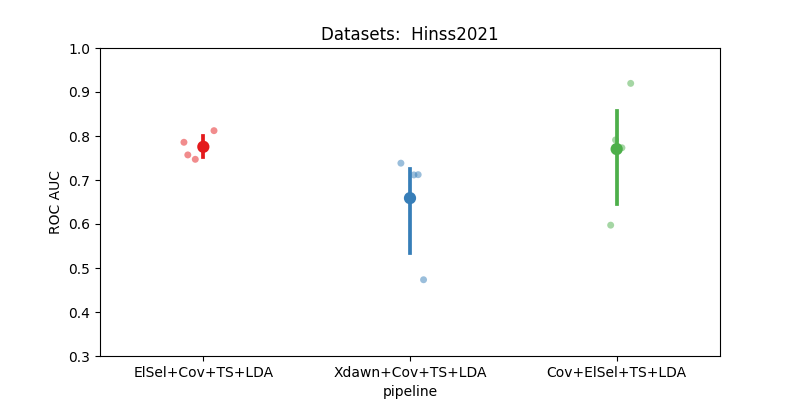

Note
Go to the end to download the full example code.
Hinss2021 classification example#
This example shows how to use the Hinss2021 dataset with the resting state paradigm.
In this example, we aim to determine the most effective channel selection strategy
for the moabb.datasets.Hinss2021 dataset.
The pipelines under consideration are:
Xdawn
Electrode selection based on time epochs data
Electrode selection based on covariance matrices
# License: BSD (3-clause)
import warnings
import numpy as np
import seaborn as sns
from matplotlib import pyplot as plt
from pyriemann.channelselection import ElectrodeSelection
from pyriemann.estimation import Covariances
from pyriemann.spatialfilters import Xdawn
from pyriemann.tangentspace import TangentSpace
from sklearn.base import TransformerMixin
from sklearn.discriminant_analysis import LinearDiscriminantAnalysis as LDA
from sklearn.pipeline import make_pipeline
from moabb import set_log_level
from moabb.datasets import Hinss2021
from moabb.evaluations import CrossSessionEvaluation
from moabb.paradigms import RestingStateToP300Adapter
# Suppressing future and runtime warnings for cleaner output
warnings.simplefilter(action="ignore", category=FutureWarning)
warnings.simplefilter(action="ignore", category=RuntimeWarning)
set_log_level("info")
Create util transformer#
Let’s create a scikit transformer mixin, that will select electrodes based on the covariance information
class EpochSelectChannel(TransformerMixin):
"""Select channels based on covariance information."""
def __init__(self, n_chan, cov_est):
self._chs_idx = None
self.n_chan = n_chan
self.cov_est = cov_est
def fit(self, X, _y=None):
# Get the covariances of the channels for each epoch.
covs = Covariances(estimator=self.cov_est).fit_transform(X)
# Get the average covariance between the channels
m = np.mean(covs, axis=0)
# Select the `n_chan` channels having the maximum covariances.
indices = np.unravel_index(
np.argpartition(m, -self.n_chan, axis=None)[-self.n_chan :], m.shape
)
# We will keep only these channels for the transform step.
self._chs_idx = np.unique(indices)
return self
def transform(self, X):
return X[:, self._chs_idx, :]
Initialization Process#
Define the experimental paradigm object (RestingState)
Load the datasets
Select a subset of subjects and specific events for analysis
# Here we define the mne events for the RestingState paradigm.
events = dict(easy=2, diff=3)
# The paradigm is adapted to the P300 paradigm.
paradigm = RestingStateToP300Adapter(events=events, tmin=0, tmax=0.5)
# We define a list with the dataset to use
datasets = [Hinss2021()]
# To reduce the computation time in the example, we will only use the
# first two subjects.
n__subjects = 2
title = "Datasets: "
for dataset in datasets:
title = title + " " + dataset.code
dataset.subject_list = dataset.subject_list[:n__subjects]
Create Pipelines#
Pipelines must be a dict of scikit-learning pipeline transformer.
pipelines = {}
pipelines["Xdawn+Cov+TS+LDA"] = make_pipeline(
Xdawn(nfilter=4), Covariances(estimator="lwf"), TangentSpace(), LDA()
)
pipelines["Cov+ElSel+TS+LDA"] = make_pipeline(
Covariances(estimator="lwf"), ElectrodeSelection(nelec=8), TangentSpace(), LDA()
)
# Pay attention here that the channel selection took place before computing the covariances:
# It is done on time epochs.
pipelines["ElSel+Cov+TS+LDA"] = make_pipeline(
EpochSelectChannel(n_chan=8, cov_est="lwf"),
Covariances(estimator="lwf"),
TangentSpace(),
LDA(),
)
Run evaluation#
Compare the pipeline using a cross session evaluation.
# Here should be cross-session
evaluation = CrossSessionEvaluation(
paradigm=paradigm,
datasets=datasets,
overwrite=False,
)
results = evaluation.process(pipelines)
Hinss2021-CrossSession: 0%| | 0/2 [00:00<?, ?it/s]
0%| | 0.00/181M [00:00<?, ?B/s]
0%| | 5.12k/181M [00:00<1:29:20, 33.8kB/s]
0%| | 37.9k/181M [00:00<19:19, 156kB/s]
0%| | 86.0k/181M [00:00<11:54, 253kB/s]
0%| | 167k/181M [00:00<07:32, 400kB/s]
0%| | 254k/181M [00:00<06:02, 499kB/s]
0%| | 368k/181M [00:00<04:46, 630kB/s]
0%| | 450k/181M [00:00<04:44, 635kB/s]
0%| | 548k/181M [00:01<04:26, 677kB/s]
0%|▏ | 629k/181M [00:01<04:31, 664kB/s]
0%|▏ | 727k/181M [00:01<04:18, 697kB/s]
0%|▏ | 809k/181M [00:01<04:25, 680kB/s]
1%|▏ | 956k/181M [00:01<03:38, 823kB/s]
1%|▏ | 1.07M/181M [00:01<03:32, 846kB/s]
1%|▎ | 1.17M/181M [00:01<03:39, 820kB/s]
1%|▎ | 1.27M/181M [00:01<03:43, 805kB/s]
1%|▎ | 1.35M/181M [00:02<03:57, 756kB/s]
1%|▎ | 1.45M/181M [00:02<03:57, 757kB/s]
1%|▎ | 1.56M/181M [00:02<03:44, 800kB/s]
1%|▎ | 1.64M/181M [00:02<03:59, 750kB/s]
1%|▎ | 1.72M/181M [00:02<04:09, 718kB/s]
1%|▍ | 1.81M/181M [00:02<04:17, 695kB/s]
1%|▍ | 1.90M/181M [00:02<04:09, 718kB/s]
1%|▍ | 1.99M/181M [00:02<04:17, 695kB/s]
1%|▍ | 2.07M/181M [00:03<04:23, 679kB/s]
1%|▍ | 2.21M/181M [00:03<03:38, 818kB/s]
1%|▍ | 2.30M/181M [00:03<03:53, 764kB/s]
1%|▌ | 2.37M/181M [00:03<04:09, 716kB/s]
1%|▌ | 2.45M/181M [00:03<04:26, 670kB/s]
1%|▌ | 2.54M/181M [00:03<04:15, 698kB/s]
1%|▌ | 2.62M/181M [00:03<04:22, 681kB/s]
1%|▌ | 2.71M/181M [00:03<04:27, 667kB/s]
2%|▌ | 2.80M/181M [00:04<04:15, 698kB/s]
2%|▌ | 2.89M/181M [00:04<04:21, 681kB/s]
2%|▋ | 2.98M/181M [00:04<04:11, 708kB/s]
2%|▋ | 3.08M/181M [00:04<04:04, 727kB/s]
2%|▋ | 3.20M/181M [00:04<03:49, 776kB/s]
2%|▋ | 3.28M/181M [00:04<04:01, 736kB/s]
2%|▋ | 3.39M/181M [00:04<03:46, 785kB/s]
2%|▊ | 3.49M/181M [00:05<03:47, 780kB/s]
2%|▊ | 3.57M/181M [00:05<04:00, 739kB/s]
2%|▊ | 3.72M/181M [00:05<03:25, 863kB/s]
2%|▊ | 3.83M/181M [00:05<03:23, 871kB/s]
2%|▊ | 3.92M/181M [00:05<03:36, 817kB/s]
2%|▊ | 4.00M/181M [00:05<03:51, 764kB/s]
2%|▉ | 4.10M/181M [00:05<03:55, 752kB/s]
2%|▉ | 4.24M/181M [00:05<03:22, 873kB/s]
2%|▉ | 4.33M/181M [00:06<03:37, 811kB/s]
2%|▉ | 4.47M/181M [00:06<03:16, 897kB/s]
3%|▉ | 4.57M/181M [00:06<03:25, 859kB/s]
3%|█ | 4.66M/181M [00:06<03:39, 803kB/s]
3%|█ | 4.75M/181M [00:06<03:44, 784kB/s]
3%|█ | 4.85M/181M [00:06<03:47, 775kB/s]
3%|█ | 4.93M/181M [00:06<03:59, 735kB/s]
3%|█ | 5.03M/181M [00:06<03:55, 746kB/s]
3%|█ | 5.11M/181M [00:07<04:06, 715kB/s]
3%|█ | 5.21M/181M [00:07<04:00, 732kB/s]
3%|█▏ | 5.35M/181M [00:07<03:25, 856kB/s]
3%|█▏ | 5.45M/181M [00:07<03:31, 831kB/s]
3%|█▏ | 5.54M/181M [00:07<03:45, 779kB/s]
3%|█▏ | 5.62M/181M [00:07<03:59, 733kB/s]
3%|█▏ | 5.76M/181M [00:07<03:23, 860kB/s]
3%|█▎ | 5.86M/181M [00:07<03:30, 831kB/s]
3%|█▎ | 5.96M/181M [00:08<03:35, 812kB/s]
3%|█▎ | 6.04M/181M [00:08<03:49, 761kB/s]
3%|█▎ | 6.12M/181M [00:08<04:01, 726kB/s]
3%|█▎ | 6.27M/181M [00:08<03:24, 855kB/s]
4%|█▎ | 6.36M/181M [00:08<03:38, 801kB/s]
4%|█▍ | 6.47M/181M [00:08<03:33, 817kB/s]
4%|█▍ | 6.58M/181M [00:08<03:27, 841kB/s]
4%|█▍ | 6.70M/181M [00:08<03:23, 858kB/s]
4%|█▍ | 6.78M/181M [00:09<03:37, 803kB/s]
4%|█▍ | 6.88M/181M [00:09<03:42, 781kB/s]
4%|█▌ | 7.01M/181M [00:09<03:23, 853kB/s]
4%|█▌ | 7.12M/181M [00:09<03:20, 867kB/s]
4%|█▌ | 7.22M/181M [00:09<03:27, 837kB/s]
4%|█▌ | 7.32M/181M [00:09<03:32, 817kB/s]
4%|█▌ | 7.40M/181M [00:09<03:47, 764kB/s]
4%|█▌ | 7.50M/181M [00:09<03:47, 764kB/s]
4%|█▋ | 7.58M/181M [00:10<03:58, 727kB/s]
4%|█▋ | 7.73M/181M [00:10<03:23, 852kB/s]
4%|█▋ | 7.82M/181M [00:10<03:29, 828kB/s]
4%|█▋ | 7.92M/181M [00:10<03:33, 810kB/s]
4%|█▋ | 8.00M/181M [00:10<03:47, 760kB/s]
4%|█▋ | 8.12M/181M [00:10<03:36, 799kB/s]
5%|█▊ | 8.22M/181M [00:10<03:38, 791kB/s]
5%|█▊ | 8.31M/181M [00:11<03:41, 780kB/s]
5%|█▊ | 8.40M/181M [00:11<03:53, 739kB/s]
5%|█▊ | 8.48M/181M [00:11<04:04, 707kB/s]
5%|█▊ | 8.58M/181M [00:11<03:57, 726kB/s]
5%|█▊ | 8.67M/181M [00:11<03:53, 738kB/s]
5%|█▉ | 8.77M/181M [00:11<03:50, 748kB/s]
5%|█▉ | 8.90M/181M [00:11<03:26, 832kB/s]
5%|█▉ | 9.00M/181M [00:11<03:32, 810kB/s]
5%|█▉ | 9.10M/181M [00:12<03:35, 798kB/s]
5%|█▉ | 9.20M/181M [00:12<03:37, 790kB/s]
5%|█▉ | 9.28M/181M [00:12<03:50, 745kB/s]
5%|██ | 9.38M/181M [00:12<03:48, 753kB/s]
5%|██ | 9.48M/181M [00:12<03:46, 757kB/s]
5%|██ | 9.57M/181M [00:12<03:45, 759kB/s]
5%|██ | 9.66M/181M [00:12<03:57, 721kB/s]
5%|██ | 9.79M/181M [00:12<03:30, 812kB/s]
5%|██▏ | 9.88M/181M [00:13<03:34, 800kB/s]
6%|██▏ | 9.97M/181M [00:13<03:47, 752kB/s]
6%|██▏ | 10.1M/181M [00:13<03:35, 794kB/s]
6%|██▏ | 10.2M/181M [00:13<03:48, 748kB/s]
6%|██▏ | 10.2M/181M [00:13<03:59, 712kB/s]
6%|██▏ | 10.4M/181M [00:13<03:22, 842kB/s]
6%|██▎ | 10.5M/181M [00:13<03:27, 821kB/s]
6%|██▎ | 10.6M/181M [00:13<03:41, 770kB/s]
6%|██▎ | 10.7M/181M [00:14<03:42, 765kB/s]
6%|██▎ | 10.8M/181M [00:14<03:21, 844kB/s]
6%|██▎ | 10.9M/181M [00:14<03:27, 822kB/s]
6%|██▎ | 11.0M/181M [00:14<03:30, 806kB/s]
6%|██▍ | 11.1M/181M [00:14<03:34, 794kB/s]
6%|██▍ | 11.2M/181M [00:14<03:36, 785kB/s]
6%|██▍ | 11.3M/181M [00:14<03:18, 855kB/s]
6%|██▍ | 11.4M/181M [00:14<03:24, 829kB/s]
6%|██▍ | 11.5M/181M [00:15<03:38, 776kB/s]
6%|██▍ | 11.6M/181M [00:15<03:39, 772kB/s]
6%|██▌ | 11.7M/181M [00:15<03:29, 807kB/s]
7%|██▌ | 11.8M/181M [00:15<03:13, 872kB/s]
7%|██▌ | 11.9M/181M [00:15<03:27, 817kB/s]
7%|██▌ | 12.0M/181M [00:15<03:34, 788kB/s]
7%|██▌ | 12.1M/181M [00:15<03:35, 783kB/s]
7%|██▋ | 12.2M/181M [00:16<03:37, 777kB/s]
7%|██▋ | 12.3M/181M [00:16<03:49, 737kB/s]
7%|██▋ | 12.4M/181M [00:16<03:58, 708kB/s]
7%|██▋ | 12.5M/181M [00:16<04:05, 688kB/s]
7%|██▋ | 12.6M/181M [00:16<03:34, 787kB/s]
7%|██▋ | 12.7M/181M [00:16<03:49, 735kB/s]
7%|██▋ | 12.8M/181M [00:16<03:58, 705kB/s]
7%|██▊ | 12.9M/181M [00:16<03:52, 724kB/s]
7%|██▊ | 13.0M/181M [00:17<03:26, 815kB/s]
7%|██▊ | 13.1M/181M [00:17<03:46, 741kB/s]
7%|██▊ | 13.2M/181M [00:17<03:23, 824kB/s]
7%|██▊ | 13.3M/181M [00:17<03:18, 844kB/s]
7%|██▉ | 13.4M/181M [00:17<03:14, 860kB/s]
7%|██▉ | 13.5M/181M [00:17<03:27, 805kB/s]
8%|██▉ | 13.6M/181M [00:17<03:33, 783kB/s]
8%|██▉ | 13.7M/181M [00:17<03:45, 741kB/s]
8%|██▉ | 13.8M/181M [00:18<03:56, 708kB/s]
8%|██▉ | 13.9M/181M [00:18<03:50, 725kB/s]
8%|███ | 14.0M/181M [00:18<03:58, 700kB/s]
8%|███ | 14.0M/181M [00:18<04:04, 682kB/s]
8%|███ | 14.1M/181M [00:18<03:55, 708kB/s]
8%|███ | 14.2M/181M [00:18<04:02, 688kB/s]
8%|███ | 14.3M/181M [00:18<04:07, 674kB/s]
8%|███ | 14.4M/181M [00:18<03:58, 700kB/s]
8%|███ | 14.5M/181M [00:19<04:04, 682kB/s]
8%|███▏ | 14.6M/181M [00:19<03:55, 708kB/s]
8%|███▏ | 14.7M/181M [00:19<04:01, 688kB/s]
8%|███▏ | 14.8M/181M [00:19<03:20, 827kB/s]
8%|███▏ | 14.9M/181M [00:19<03:25, 808kB/s]
8%|███▏ | 15.0M/181M [00:19<03:39, 758kB/s]
8%|███▏ | 15.1M/181M [00:19<03:49, 723kB/s]
8%|███▎ | 15.2M/181M [00:19<03:57, 699kB/s]
8%|███▎ | 15.2M/181M [00:20<03:50, 720kB/s]
8%|███▎ | 15.3M/181M [00:20<03:45, 734kB/s]
9%|███▎ | 15.5M/181M [00:20<03:32, 781kB/s]
9%|███▎ | 15.6M/181M [00:20<03:22, 816kB/s]
9%|███▍ | 15.7M/181M [00:20<03:26, 802kB/s]
9%|███▍ | 15.8M/181M [00:20<03:18, 831kB/s]
9%|███▍ | 15.9M/181M [00:20<03:06, 887kB/s]
9%|███▍ | 16.0M/181M [00:21<03:05, 890kB/s]
9%|███▍ | 16.1M/181M [00:21<03:13, 854kB/s]
9%|███▌ | 16.3M/181M [00:21<02:54, 944kB/s]
9%|███▌ | 16.4M/181M [00:21<03:06, 883kB/s]
9%|███▌ | 16.5M/181M [00:21<03:18, 828kB/s]
9%|███▌ | 16.5M/181M [00:21<03:32, 774kB/s]
9%|███▌ | 16.6M/181M [00:21<03:46, 725kB/s]
9%|███▌ | 16.7M/181M [00:21<03:43, 734kB/s]
9%|███▌ | 16.8M/181M [00:22<03:52, 706kB/s]
9%|███▋ | 16.9M/181M [00:22<03:46, 725kB/s]
9%|███▋ | 17.0M/181M [00:22<03:12, 852kB/s]
9%|███▋ | 17.1M/181M [00:22<03:18, 828kB/s]
10%|███▋ | 17.2M/181M [00:22<03:31, 774kB/s]
10%|███▋ | 17.3M/181M [00:22<03:32, 770kB/s]
10%|███▊ | 17.4M/181M [00:22<03:43, 732kB/s]
10%|███▊ | 17.6M/181M [00:22<03:04, 885kB/s]
10%|███▊ | 17.7M/181M [00:23<03:17, 826kB/s]
10%|███▊ | 17.7M/181M [00:23<03:31, 773kB/s]
10%|███▊ | 17.8M/181M [00:23<03:35, 756kB/s]
10%|███▊ | 17.9M/181M [00:23<03:46, 722kB/s]
10%|███▉ | 18.0M/181M [00:23<03:41, 736kB/s]
10%|███▉ | 18.1M/181M [00:23<03:51, 705kB/s]
10%|███▉ | 18.2M/181M [00:23<03:44, 724kB/s]
10%|███▉ | 18.3M/181M [00:23<03:52, 700kB/s]
10%|███▉ | 18.4M/181M [00:24<03:45, 720kB/s]
10%|███▉ | 18.5M/181M [00:24<03:41, 735kB/s]
10%|███▉ | 18.6M/181M [00:24<03:50, 705kB/s]
10%|████ | 18.6M/181M [00:24<03:44, 724kB/s]
10%|████ | 18.7M/181M [00:24<03:39, 738kB/s]
10%|████ | 18.8M/181M [00:24<03:37, 747kB/s]
10%|████ | 18.9M/181M [00:24<03:46, 716kB/s]
11%|████ | 19.0M/181M [00:24<03:41, 732kB/s]
11%|████▏ | 19.2M/181M [00:25<03:17, 818kB/s]
11%|████▏ | 19.3M/181M [00:25<03:21, 803kB/s]
11%|████▏ | 19.3M/181M [00:25<03:34, 755kB/s]
11%|████▏ | 19.4M/181M [00:25<03:32, 759kB/s]
11%|████▏ | 19.5M/181M [00:25<03:43, 724kB/s]
11%|████▏ | 19.7M/181M [00:25<03:10, 848kB/s]
11%|████▎ | 19.7M/181M [00:25<03:23, 794kB/s]
11%|████▎ | 19.8M/181M [00:25<03:36, 744kB/s]
11%|████▎ | 19.9M/181M [00:26<03:35, 747kB/s]
11%|████▎ | 20.1M/181M [00:26<03:05, 869kB/s]
11%|████▎ | 20.2M/181M [00:26<03:17, 813kB/s]
11%|████▎ | 20.3M/181M [00:26<03:15, 824kB/s]
11%|████▍ | 20.4M/181M [00:26<02:53, 923kB/s]
11%|████▍ | 20.5M/181M [00:26<02:55, 916kB/s]
11%|████▍ | 20.6M/181M [00:26<03:07, 857kB/s]
11%|████▍ | 20.7M/181M [00:27<03:20, 802kB/s]
11%|████▍ | 20.8M/181M [00:27<03:31, 756kB/s]
12%|████▍ | 20.9M/181M [00:27<03:42, 721kB/s]
12%|████▌ | 21.0M/181M [00:27<03:37, 736kB/s]
12%|████▌ | 21.1M/181M [00:27<03:34, 746kB/s]
12%|████▌ | 21.2M/181M [00:27<03:32, 754kB/s]
12%|████▌ | 21.3M/181M [00:27<03:11, 833kB/s]
12%|████▌ | 21.4M/181M [00:27<03:25, 778kB/s]
12%|████▋ | 21.5M/181M [00:28<03:26, 771kB/s]
12%|████▋ | 21.6M/181M [00:28<03:27, 770kB/s]
12%|████▋ | 21.7M/181M [00:28<03:08, 847kB/s]
12%|████▋ | 21.8M/181M [00:28<03:14, 817kB/s]
12%|████▋ | 21.9M/181M [00:28<03:28, 763kB/s]
12%|████▋ | 22.0M/181M [00:28<03:18, 803kB/s]
12%|████▊ | 22.1M/181M [00:28<03:20, 793kB/s]
12%|████▊ | 22.2M/181M [00:28<03:22, 785kB/s]
12%|████▊ | 22.3M/181M [00:29<03:34, 739kB/s]
12%|████▊ | 22.4M/181M [00:29<03:43, 710kB/s]
12%|████▊ | 22.4M/181M [00:29<03:50, 689kB/s]
12%|████▊ | 22.6M/181M [00:29<03:11, 828kB/s]
13%|████▉ | 22.7M/181M [00:29<03:15, 810kB/s]
13%|████▉ | 22.8M/181M [00:29<03:28, 760kB/s]
13%|████▉ | 22.9M/181M [00:29<03:08, 837kB/s]
13%|████▉ | 23.0M/181M [00:29<03:04, 856kB/s]
13%|████▉ | 23.1M/181M [00:30<03:17, 801kB/s]
13%|████▉ | 23.2M/181M [00:30<03:21, 782kB/s]
13%|█████ | 23.3M/181M [00:30<02:57, 887kB/s]
13%|█████ | 23.4M/181M [00:30<03:05, 851kB/s]
13%|█████ | 23.5M/181M [00:30<03:17, 798kB/s]
13%|█████ | 23.6M/181M [00:30<03:22, 779kB/s]
13%|█████ | 23.7M/181M [00:30<03:33, 738kB/s]
13%|█████ | 23.8M/181M [00:30<03:41, 709kB/s]
13%|█████▏ | 23.9M/181M [00:31<03:36, 725kB/s]
13%|█████▏ | 24.0M/181M [00:31<03:44, 700kB/s]
13%|█████▏ | 24.0M/181M [00:31<03:50, 682kB/s]
13%|█████▏ | 24.1M/181M [00:31<03:41, 709kB/s]
13%|█████▏ | 24.3M/181M [00:31<03:14, 804kB/s]
13%|█████▏ | 24.4M/181M [00:31<03:27, 756kB/s]
13%|█████▎ | 24.4M/181M [00:31<03:37, 719kB/s]
14%|█████▎ | 24.5M/181M [00:32<03:33, 735kB/s]
14%|█████▎ | 24.6M/181M [00:32<03:41, 706kB/s]
14%|█████▎ | 24.7M/181M [00:32<03:47, 687kB/s]
14%|█████▎ | 24.8M/181M [00:32<03:39, 712kB/s]
14%|█████▎ | 24.9M/181M [00:32<03:46, 691kB/s]
14%|█████▍ | 25.0M/181M [00:32<03:55, 662kB/s]
14%|█████▍ | 25.1M/181M [00:32<03:44, 694kB/s]
14%|█████▍ | 25.1M/181M [00:32<03:49, 679kB/s]
14%|█████▍ | 25.3M/181M [00:33<03:19, 782kB/s]
14%|█████▍ | 25.4M/181M [00:33<03:19, 779kB/s]
14%|█████▍ | 25.5M/181M [00:33<03:20, 774kB/s]
14%|█████▌ | 25.5M/181M [00:33<03:31, 735kB/s]
14%|█████▌ | 25.7M/181M [00:33<03:00, 861kB/s]
14%|█████▌ | 25.8M/181M [00:33<03:06, 834kB/s]
14%|█████▌ | 25.9M/181M [00:33<03:18, 781kB/s]
14%|█████▌ | 26.0M/181M [00:33<03:21, 770kB/s]
14%|█████▌ | 26.1M/181M [00:34<03:31, 732kB/s]
14%|█████▋ | 26.2M/181M [00:34<03:29, 740kB/s]
15%|█████▋ | 26.3M/181M [00:34<03:27, 747kB/s]
15%|█████▋ | 26.3M/181M [00:34<03:36, 716kB/s]
15%|█████▋ | 26.5M/181M [00:34<03:02, 847kB/s]
15%|█████▋ | 26.6M/181M [00:34<02:59, 860kB/s]
15%|█████▋ | 26.7M/181M [00:34<03:12, 803kB/s]
15%|█████▊ | 26.8M/181M [00:34<03:18, 775kB/s]
15%|█████▊ | 26.9M/181M [00:35<03:31, 729kB/s]
15%|█████▊ | 27.0M/181M [00:35<03:32, 724kB/s]
15%|█████▊ | 27.1M/181M [00:35<03:29, 735kB/s]
15%|█████▊ | 27.1M/181M [00:35<03:37, 706kB/s]
15%|█████▊ | 27.3M/181M [00:35<03:21, 763kB/s]
15%|█████▉ | 27.3M/181M [00:35<03:20, 765kB/s]
15%|█████▉ | 27.4M/181M [00:35<03:22, 760kB/s]
15%|█████▉ | 27.5M/181M [00:35<03:31, 725kB/s]
15%|█████▉ | 27.6M/181M [00:36<03:28, 734kB/s]
15%|█████▉ | 27.8M/181M [00:36<02:58, 860kB/s]
15%|██████ | 27.9M/181M [00:36<03:10, 806kB/s]
15%|██████ | 28.0M/181M [00:36<03:15, 783kB/s]
15%|██████ | 28.0M/181M [00:36<03:26, 741kB/s]
16%|██████ | 28.1M/181M [00:36<03:24, 747kB/s]
16%|██████ | 28.2M/181M [00:36<03:33, 715kB/s]
16%|██████ | 28.3M/181M [00:37<03:40, 693kB/s]
16%|██████▏ | 28.4M/181M [00:37<03:03, 831kB/s]
16%|██████▏ | 28.5M/181M [00:37<03:07, 813kB/s]
16%|██████▏ | 28.6M/181M [00:37<03:20, 762kB/s]
16%|██████▏ | 28.7M/181M [00:37<03:30, 724kB/s]
16%|██████▏ | 28.8M/181M [00:37<03:26, 738kB/s]
16%|██████▏ | 29.0M/181M [00:37<02:56, 863kB/s]
16%|██████▎ | 29.0M/181M [00:37<03:02, 835kB/s]
16%|██████▎ | 29.1M/181M [00:38<03:14, 781kB/s]
16%|██████▎ | 29.2M/181M [00:38<03:17, 770kB/s]
16%|██████▎ | 29.3M/181M [00:38<03:07, 808kB/s]
16%|██████▎ | 29.5M/181M [00:38<02:53, 874kB/s]
16%|██████▎ | 29.6M/181M [00:38<02:59, 843kB/s]
16%|██████▍ | 29.7M/181M [00:38<03:11, 789kB/s]
16%|██████▍ | 29.7M/181M [00:38<03:24, 740kB/s]
16%|██████▍ | 29.8M/181M [00:38<03:23, 744kB/s]
17%|██████▍ | 29.9M/181M [00:39<03:31, 714kB/s]
17%|██████▍ | 30.0M/181M [00:39<03:38, 692kB/s]
17%|██████▍ | 30.1M/181M [00:39<03:01, 830kB/s]
17%|██████▌ | 30.3M/181M [00:39<02:57, 848kB/s]
17%|██████▌ | 30.4M/181M [00:39<03:02, 825kB/s]
17%|██████▌ | 30.4M/181M [00:39<03:15, 772kB/s]
17%|██████▌ | 30.5M/181M [00:39<03:16, 767kB/s]
17%|██████▌ | 30.6M/181M [00:39<03:26, 727kB/s]
17%|██████▌ | 30.7M/181M [00:40<03:34, 701kB/s]
17%|██████▋ | 30.8M/181M [00:40<03:28, 719kB/s]
17%|██████▋ | 30.9M/181M [00:40<03:35, 696kB/s]
17%|██████▋ | 31.0M/181M [00:40<03:18, 756kB/s]
17%|██████▋ | 31.1M/181M [00:40<03:27, 722kB/s]
17%|██████▋ | 31.2M/181M [00:40<03:23, 736kB/s]
17%|██████▋ | 31.3M/181M [00:40<03:21, 744kB/s]
17%|██████▊ | 31.4M/181M [00:40<03:29, 713kB/s]
17%|██████▊ | 31.4M/181M [00:41<03:36, 692kB/s]
17%|██████▊ | 31.5M/181M [00:41<03:29, 712kB/s]
18%|██████▊ | 31.7M/181M [00:41<02:56, 844kB/s]
18%|██████▊ | 31.8M/181M [00:41<03:08, 791kB/s]
18%|██████▊ | 31.8M/181M [00:41<03:21, 741kB/s]
18%|██████▉ | 32.0M/181M [00:41<02:53, 860kB/s]
18%|██████▉ | 32.1M/181M [00:41<03:05, 804kB/s]
18%|██████▉ | 32.2M/181M [00:42<03:17, 753kB/s]
18%|██████▉ | 32.3M/181M [00:42<03:18, 749kB/s]
18%|██████▉ | 32.3M/181M [00:42<03:28, 715kB/s]
18%|██████▉ | 32.5M/181M [00:42<03:13, 770kB/s]
18%|███████ | 32.5M/181M [00:42<03:23, 731kB/s]
18%|███████ | 32.6M/181M [00:42<03:10, 781kB/s]
18%|███████ | 32.7M/181M [00:42<03:10, 777kB/s]
18%|███████ | 32.8M/181M [00:42<03:21, 737kB/s]
18%|███████ | 32.9M/181M [00:43<03:19, 744kB/s]
18%|███████ | 33.0M/181M [00:43<03:07, 790kB/s]
18%|███████▏ | 33.1M/181M [00:43<03:18, 746kB/s]
18%|███████▏ | 33.2M/181M [00:43<03:16, 752kB/s]
18%|███████▏ | 33.3M/181M [00:43<03:25, 718kB/s]
18%|███████▏ | 33.4M/181M [00:43<03:22, 731kB/s]
19%|███████▏ | 33.5M/181M [00:43<02:51, 858kB/s]
19%|███████▏ | 33.6M/181M [00:43<03:03, 801kB/s]
19%|███████▎ | 33.7M/181M [00:44<03:08, 782kB/s]
19%|███████▎ | 33.8M/181M [00:44<03:00, 817kB/s]
19%|███████▎ | 33.9M/181M [00:44<03:03, 799kB/s]
19%|███████▎ | 34.0M/181M [00:44<03:05, 790kB/s]
19%|███████▎ | 34.1M/181M [00:44<03:16, 746kB/s]
19%|███████▎ | 34.2M/181M [00:44<03:14, 753kB/s]
19%|███████▍ | 34.3M/181M [00:44<03:24, 718kB/s]
19%|███████▍ | 34.4M/181M [00:44<03:31, 695kB/s]
19%|███████▍ | 34.5M/181M [00:45<03:36, 676kB/s]
19%|███████▍ | 34.6M/181M [00:45<03:27, 704kB/s]
19%|███████▍ | 34.6M/181M [00:45<03:33, 685kB/s]
19%|███████▍ | 34.7M/181M [00:45<03:25, 710kB/s]
19%|███████▌ | 34.8M/181M [00:45<03:31, 690kB/s]
19%|███████▌ | 34.9M/181M [00:45<03:36, 676kB/s]
19%|███████▌ | 35.0M/181M [00:45<03:28, 702kB/s]
19%|███████▌ | 35.1M/181M [00:45<03:02, 799kB/s]
19%|███████▌ | 35.2M/181M [00:46<03:04, 790kB/s]
20%|███████▍ | 35.4M/181M [00:46<02:18, 1.05MB/s]
20%|███████▋ | 35.5M/181M [00:46<02:27, 986kB/s]
20%|███████▋ | 35.7M/181M [00:46<02:34, 940kB/s]
20%|███████▋ | 35.8M/181M [00:46<02:30, 966kB/s]
20%|███████▋ | 35.9M/181M [00:46<02:40, 905kB/s]
20%|███████▊ | 36.0M/181M [00:46<02:50, 849kB/s]
20%|███████▊ | 36.1M/181M [00:46<03:03, 791kB/s]
20%|███████▊ | 36.1M/181M [00:47<03:15, 743kB/s]
20%|███████▊ | 36.2M/181M [00:47<03:19, 727kB/s]
20%|███████▊ | 36.4M/181M [00:47<02:49, 855kB/s]
20%|███████▋ | 36.6M/181M [00:47<02:03, 1.17MB/s]
20%|███████▋ | 36.7M/181M [00:47<02:11, 1.09MB/s]
20%|███████▋ | 36.8M/181M [00:47<02:20, 1.03MB/s]
20%|███████▉ | 37.0M/181M [00:47<02:29, 963kB/s]
20%|███████▉ | 37.1M/181M [00:48<02:28, 970kB/s]
21%|████████ | 37.2M/181M [00:48<02:38, 908kB/s]
21%|████████ | 37.3M/181M [00:48<02:49, 848kB/s]
21%|████████ | 37.4M/181M [00:48<02:50, 841kB/s]
21%|████████ | 37.5M/181M [00:48<02:39, 898kB/s]
21%|███████▉ | 37.7M/181M [00:48<02:16, 1.05MB/s]
21%|████████▏ | 37.8M/181M [00:48<02:25, 981kB/s]
21%|███████▉ | 38.0M/181M [00:48<02:06, 1.13MB/s]
21%|███████▉ | 38.1M/181M [00:49<02:09, 1.10MB/s]
21%|████████ | 38.2M/181M [00:49<02:18, 1.03MB/s]
21%|████████▎ | 38.3M/181M [00:49<02:28, 963kB/s]
21%|████████▎ | 38.4M/181M [00:49<02:37, 905kB/s]
21%|████████▎ | 38.5M/181M [00:49<02:38, 901kB/s]
21%|████████▎ | 38.6M/181M [00:49<02:38, 900kB/s]
21%|████████▎ | 38.8M/181M [00:49<02:38, 897kB/s]
21%|████████▎ | 38.9M/181M [00:49<02:45, 859kB/s]
22%|████████▏ | 39.1M/181M [00:50<02:08, 1.10MB/s]
22%|████████▏ | 39.2M/181M [00:50<02:16, 1.04MB/s]
22%|████████▍ | 39.3M/181M [00:50<02:22, 996kB/s]
22%|████████▍ | 39.4M/181M [00:50<02:26, 966kB/s]
22%|████████▌ | 39.5M/181M [00:50<02:29, 946kB/s]
22%|████████▌ | 39.6M/181M [00:50<02:38, 893kB/s]
22%|████████▌ | 39.8M/181M [00:50<02:31, 930kB/s]
22%|████████▌ | 39.9M/181M [00:50<02:33, 920kB/s]
22%|████████▌ | 40.0M/181M [00:51<02:43, 861kB/s]
22%|████████▋ | 40.1M/181M [00:51<02:46, 848kB/s]
22%|████████▍ | 40.3M/181M [00:51<02:13, 1.05MB/s]
22%|████████▍ | 40.4M/181M [00:51<02:14, 1.05MB/s]
22%|████████▌ | 40.5M/181M [00:51<02:20, 1.00MB/s]
22%|████████▊ | 40.6M/181M [00:51<02:24, 970kB/s]
22%|████████▊ | 40.7M/181M [00:51<02:34, 910kB/s]
23%|████████▊ | 40.8M/181M [00:51<02:35, 904kB/s]
23%|████████▊ | 41.0M/181M [00:52<02:35, 902kB/s]
23%|████████▊ | 41.1M/181M [00:52<02:42, 862kB/s]
23%|████████▊ | 41.2M/181M [00:52<02:47, 834kB/s]
23%|████████▉ | 41.2M/181M [00:52<02:58, 781kB/s]
23%|████████▉ | 41.3M/181M [00:52<02:52, 809kB/s]
23%|████████▉ | 41.5M/181M [00:52<02:47, 835kB/s]
23%|████████▉ | 41.6M/181M [00:52<02:43, 854kB/s]
23%|████████▉ | 41.7M/181M [00:52<02:21, 982kB/s]
23%|█████████ | 41.8M/181M [00:53<02:31, 918kB/s]
23%|█████████ | 42.0M/181M [00:53<02:32, 910kB/s]
23%|█████████ | 42.1M/181M [00:53<02:33, 905kB/s]
23%|█████████ | 42.2M/181M [00:53<02:43, 848kB/s]
23%|█████████ | 42.3M/181M [00:53<02:40, 863kB/s]
23%|█████████▏ | 42.4M/181M [00:53<02:39, 868kB/s]
23%|█████████▏ | 42.5M/181M [00:53<02:45, 839kB/s]
24%|█████████▏ | 42.6M/181M [00:54<02:56, 785kB/s]
24%|█████████▏ | 42.7M/181M [00:54<02:58, 775kB/s]
24%|█████████▏ | 42.8M/181M [00:54<02:50, 810kB/s]
24%|█████████▏ | 42.9M/181M [00:54<02:53, 798kB/s]
24%|█████████▎ | 43.0M/181M [00:54<02:47, 825kB/s]
24%|█████████▎ | 43.1M/181M [00:54<02:42, 847kB/s]
24%|█████████▎ | 43.2M/181M [00:54<02:39, 862kB/s]
24%|█████████▎ | 43.3M/181M [00:54<02:45, 834kB/s]
24%|█████████▎ | 43.4M/181M [00:55<02:55, 782kB/s]
24%|█████████▍ | 43.5M/181M [00:55<02:42, 848kB/s]
24%|█████████▍ | 43.7M/181M [00:55<02:20, 979kB/s]
24%|█████████▍ | 43.8M/181M [00:55<02:29, 915kB/s]
24%|█████████▍ | 43.9M/181M [00:55<02:39, 858kB/s]
24%|█████████▍ | 44.0M/181M [00:55<02:42, 843kB/s]
24%|█████████▍ | 44.1M/181M [00:55<02:53, 790kB/s]
24%|█████████▌ | 44.2M/181M [00:55<02:56, 776kB/s]
24%|█████████▌ | 44.3M/181M [00:56<02:48, 813kB/s]
25%|█████████▌ | 44.4M/181M [00:56<02:29, 915kB/s]
25%|█████████▌ | 44.6M/181M [00:56<02:30, 908kB/s]
25%|█████████▌ | 44.6M/181M [00:56<02:37, 866kB/s]
25%|█████████▋ | 44.8M/181M [00:56<02:35, 876kB/s]
25%|█████████▋ | 44.9M/181M [00:56<02:41, 844kB/s]
25%|█████████▋ | 45.0M/181M [00:56<02:31, 898kB/s]
25%|█████████▋ | 45.1M/181M [00:56<02:39, 851kB/s]
25%|█████████▋ | 45.2M/181M [00:57<02:37, 864kB/s]
25%|█████████▊ | 45.4M/181M [00:57<02:22, 950kB/s]
25%|█████████▊ | 45.5M/181M [00:57<02:31, 896kB/s]
25%|█████████▊ | 45.5M/181M [00:57<02:41, 838kB/s]
25%|█████████▊ | 45.6M/181M [00:57<02:42, 834kB/s]
25%|█████████▊ | 45.8M/181M [00:57<02:38, 852kB/s]
25%|█████████▉ | 45.9M/181M [00:57<02:43, 827kB/s]
25%|█████████▉ | 45.9M/181M [00:57<02:54, 773kB/s]
25%|█████████▉ | 46.0M/181M [00:58<02:55, 769kB/s]
25%|█████████▉ | 46.2M/181M [00:58<02:47, 805kB/s]
26%|█████████▉ | 46.3M/181M [00:58<02:42, 831kB/s]
26%|█████████▉ | 46.4M/181M [00:58<02:31, 890kB/s]
26%|██████████ | 46.5M/181M [00:58<02:37, 853kB/s]
26%|██████████ | 46.6M/181M [00:58<02:28, 903kB/s]
26%|██████████ | 46.7M/181M [00:58<02:38, 845kB/s]
26%|██████████ | 46.8M/181M [00:59<02:40, 839kB/s]
26%|██████████ | 47.0M/181M [00:59<02:29, 895kB/s]
26%|██████████▏ | 47.1M/181M [00:59<02:29, 895kB/s]
26%|██████████▏ | 47.2M/181M [00:59<02:23, 932kB/s]
26%|██████████▏ | 47.3M/181M [00:59<02:19, 958kB/s]
26%|██████████▏ | 47.4M/181M [00:59<02:22, 940kB/s]
26%|██████████▏ | 47.6M/181M [00:59<02:18, 966kB/s]
26%|██████████▎ | 47.7M/181M [00:59<02:27, 904kB/s]
26%|██████████▎ | 47.8M/181M [01:00<02:27, 903kB/s]
26%|██████████▎ | 47.9M/181M [01:00<02:34, 863kB/s]
27%|██████████▎ | 48.0M/181M [01:00<02:25, 912kB/s]
27%|██████████▎ | 48.1M/181M [01:00<02:26, 905kB/s]
27%|██████████▍ | 48.2M/181M [01:00<02:27, 900kB/s]
27%|██████████▍ | 48.3M/181M [01:00<02:34, 860kB/s]
27%|██████████▍ | 48.5M/181M [01:00<02:33, 865kB/s]
27%|██████████▍ | 48.6M/181M [01:00<02:20, 945kB/s]
27%|██████████▏ | 48.8M/181M [01:01<02:11, 1.01MB/s]
27%|██████████▌ | 48.9M/181M [01:01<02:15, 973kB/s]
27%|██████████▌ | 49.0M/181M [01:01<02:24, 912kB/s]
27%|██████████▌ | 49.1M/181M [01:01<02:25, 907kB/s]
27%|██████████▌ | 49.2M/181M [01:01<02:19, 943kB/s]
27%|██████████▌ | 49.3M/181M [01:01<02:29, 884kB/s]
27%|██████████▋ | 49.4M/181M [01:01<02:27, 893kB/s]
27%|██████████▋ | 49.5M/181M [01:01<02:27, 890kB/s]
27%|██████████▍ | 49.7M/181M [01:02<02:05, 1.05MB/s]
28%|██████████▍ | 49.9M/181M [01:02<02:01, 1.08MB/s]
28%|██████████▍ | 50.0M/181M [01:02<01:59, 1.10MB/s]
28%|██████████▌ | 50.1M/181M [01:02<02:01, 1.08MB/s]
28%|██████████▌ | 50.3M/181M [01:02<02:07, 1.02MB/s]
28%|██████████▊ | 50.4M/181M [01:02<02:16, 956kB/s]
28%|██████████▊ | 50.5M/181M [01:02<02:20, 927kB/s]
28%|██████████▉ | 50.6M/181M [01:02<02:22, 918kB/s]
28%|██████████▉ | 50.7M/181M [01:03<02:29, 874kB/s]
28%|██████████▉ | 50.8M/181M [01:03<02:27, 881kB/s]
28%|██████████▉ | 50.9M/181M [01:03<02:15, 960kB/s]
28%|██████████▉ | 51.0M/181M [01:03<02:23, 903kB/s]
28%|███████████ | 51.2M/181M [01:03<02:24, 902kB/s]
28%|███████████ | 51.3M/181M [01:03<02:18, 939kB/s]
28%|███████████ | 51.4M/181M [01:03<02:20, 923kB/s]
28%|███████████ | 51.5M/181M [01:04<02:27, 876kB/s]
29%|███████████ | 51.6M/181M [01:04<02:33, 842kB/s]
29%|███████████▏ | 51.7M/181M [01:04<02:43, 789kB/s]
29%|███████████▏ | 51.8M/181M [01:04<02:31, 853kB/s]
29%|███████████▏ | 51.9M/181M [01:04<02:29, 864kB/s]
29%|███████████▏ | 52.0M/181M [01:04<02:34, 836kB/s]
29%|███████████▏ | 52.1M/181M [01:04<02:30, 854kB/s]
29%|███████████▎ | 52.2M/181M [01:04<02:35, 828kB/s]
29%|███████████▎ | 52.3M/181M [01:05<02:46, 774kB/s]
29%|███████████▎ | 52.4M/181M [01:05<02:32, 845kB/s]
29%|███████████▎ | 52.6M/181M [01:05<02:29, 861kB/s]
29%|███████████▎ | 52.7M/181M [01:05<02:27, 873kB/s]
29%|███████████▎ | 52.8M/181M [01:05<02:32, 842kB/s]
29%|███████████▍ | 52.9M/181M [01:05<02:29, 859kB/s]
29%|███████████▍ | 53.0M/181M [01:05<02:21, 906kB/s]
29%|███████████▍ | 53.1M/181M [01:05<02:21, 903kB/s]
29%|███████████▍ | 53.3M/181M [01:06<02:21, 902kB/s]
29%|███████████▌ | 53.4M/181M [01:06<02:10, 977kB/s]
30%|███████████▏ | 53.5M/181M [01:06<02:04, 1.03MB/s]
30%|███████████▌ | 53.6M/181M [01:06<02:12, 962kB/s]
30%|███████████▌ | 53.7M/181M [01:06<02:21, 899kB/s]
30%|███████████▌ | 53.9M/181M [01:06<02:22, 893kB/s]
30%|███████████▌ | 53.9M/181M [01:06<02:31, 837kB/s]
30%|███████████▋ | 54.0M/181M [01:06<02:39, 796kB/s]
30%|███████████▋ | 54.2M/181M [01:07<02:26, 865kB/s]
30%|███████████▋ | 54.3M/181M [01:07<02:24, 875kB/s]
30%|███████████▋ | 54.4M/181M [01:07<02:23, 882kB/s]
30%|███████████▋ | 54.5M/181M [01:07<02:22, 887kB/s]
30%|███████████▊ | 54.6M/181M [01:07<02:29, 847kB/s]
30%|███████████▊ | 54.7M/181M [01:07<02:33, 823kB/s]
30%|███████████▊ | 54.8M/181M [01:07<02:29, 846kB/s]
30%|███████████▊ | 55.0M/181M [01:07<02:20, 899kB/s]
30%|███████████▊ | 55.0M/181M [01:08<02:27, 853kB/s]
30%|███████████▉ | 55.2M/181M [01:08<02:25, 867kB/s]
31%|███████████▉ | 55.3M/181M [01:08<02:30, 837kB/s]
31%|███████████▉ | 55.4M/181M [01:08<02:27, 855kB/s]
31%|███████████▉ | 55.5M/181M [01:08<02:31, 829kB/s]
31%|███████████▉ | 55.6M/181M [01:08<02:28, 847kB/s]
31%|███████████▋ | 55.8M/181M [01:08<02:03, 1.02MB/s]
31%|████████████ | 55.9M/181M [01:08<02:07, 980kB/s]
31%|████████████ | 56.0M/181M [01:09<02:10, 956kB/s]
31%|████████████ | 56.1M/181M [01:09<02:13, 936kB/s]
31%|████████████ | 56.2M/181M [01:09<02:20, 886kB/s]
31%|████████████▏ | 56.3M/181M [01:09<02:26, 851kB/s]
31%|████████████▏ | 56.4M/181M [01:09<02:24, 865kB/s]
31%|████████████▏ | 56.5M/181M [01:09<02:22, 875kB/s]
31%|████████████▏ | 56.7M/181M [01:09<02:21, 879kB/s]
31%|████████████▏ | 56.8M/181M [01:10<02:20, 885kB/s]
31%|███████████▉ | 56.9M/181M [01:10<02:03, 1.00MB/s]
32%|███████████▉ | 57.1M/181M [01:10<01:58, 1.05MB/s]
32%|████████████ | 57.2M/181M [01:10<01:50, 1.12MB/s]
32%|████████████ | 57.4M/181M [01:10<01:58, 1.04MB/s]
32%|████████████▍ | 57.5M/181M [01:10<02:06, 976kB/s]
32%|████████████▍ | 57.6M/181M [01:10<02:05, 983kB/s]
32%|████████████▍ | 57.7M/181M [01:10<02:09, 955kB/s]
32%|████████████▍ | 57.8M/181M [01:11<02:17, 899kB/s]
32%|████████████▏ | 58.0M/181M [01:11<02:01, 1.01MB/s]
32%|████████████▏ | 58.1M/181M [01:11<02:00, 1.02MB/s]
32%|████████████▏ | 58.2M/181M [01:11<01:55, 1.06MB/s]
32%|████████████▌ | 58.3M/181M [01:11<02:03, 991kB/s]
32%|████████████▌ | 58.5M/181M [01:11<02:10, 938kB/s]
32%|████████████▌ | 58.6M/181M [01:11<02:07, 964kB/s]
32%|████████████▎ | 58.8M/181M [01:11<01:44, 1.17MB/s]
33%|████████████▎ | 58.9M/181M [01:12<01:51, 1.10MB/s]
33%|████████████▍ | 59.0M/181M [01:12<01:58, 1.03MB/s]
33%|████████████▍ | 59.2M/181M [01:12<01:58, 1.03MB/s]
33%|████████████▊ | 59.3M/181M [01:12<02:03, 986kB/s]
33%|████████████▊ | 59.4M/181M [01:12<02:11, 925kB/s]
33%|████████████▊ | 59.5M/181M [01:12<02:18, 876kB/s]
33%|████████████▊ | 59.6M/181M [01:12<02:11, 921kB/s]
33%|████████████▊ | 59.7M/181M [01:12<02:12, 915kB/s]
33%|████████████▉ | 59.8M/181M [01:13<02:08, 947kB/s]
33%|████████████▉ | 60.0M/181M [01:13<02:09, 932kB/s]
33%|████████████▉ | 60.1M/181M [01:13<02:17, 883kB/s]
33%|████████████▉ | 60.2M/181M [01:13<02:16, 886kB/s]
33%|████████████▉ | 60.3M/181M [01:13<02:10, 928kB/s]
33%|█████████████ | 60.4M/181M [01:13<02:06, 954kB/s]
33%|█████████████ | 60.5M/181M [01:13<02:13, 900kB/s]
33%|█████████████ | 60.6M/181M [01:13<02:13, 899kB/s]
34%|█████████████ | 60.8M/181M [01:14<02:13, 899kB/s]
34%|█████████████ | 60.9M/181M [01:14<02:19, 860kB/s]
34%|█████████████▏ | 61.0M/181M [01:14<02:18, 868kB/s]
34%|█████████████▏ | 61.1M/181M [01:14<02:05, 953kB/s]
34%|█████████████▏ | 61.2M/181M [01:14<02:13, 898kB/s]
34%|█████████████▏ | 61.3M/181M [01:14<02:19, 860kB/s]
34%|█████████████▏ | 61.4M/181M [01:14<02:23, 832kB/s]
34%|█████████████▎ | 61.5M/181M [01:15<02:20, 851kB/s]
34%|█████████████▎ | 61.6M/181M [01:15<02:24, 828kB/s]
34%|█████████████▎ | 61.7M/181M [01:15<02:20, 849kB/s]
34%|█████████████▎ | 61.9M/181M [01:15<02:18, 863kB/s]
34%|█████████████▎ | 61.9M/181M [01:15<02:22, 833kB/s]
34%|█████████████▎ | 62.0M/181M [01:15<02:32, 780kB/s]
34%|█████████████▍ | 62.1M/181M [01:15<02:26, 810kB/s]
34%|█████████████▍ | 62.3M/181M [01:15<02:10, 913kB/s]
34%|█████████████▍ | 62.4M/181M [01:16<02:10, 909kB/s]
35%|█████████████▍ | 62.5M/181M [01:16<02:17, 865kB/s]
35%|█████████████▍ | 62.6M/181M [01:16<02:09, 912kB/s]
35%|█████████████▌ | 62.8M/181M [01:16<02:09, 910kB/s]
35%|█████████████▌ | 62.9M/181M [01:16<02:05, 945kB/s]
35%|█████████████▌ | 63.0M/181M [01:16<02:13, 885kB/s]
35%|█████████████▌ | 63.1M/181M [01:16<02:06, 931kB/s]
35%|█████████████▌ | 63.2M/181M [01:16<02:13, 884kB/s]
35%|█████████████▋ | 63.4M/181M [01:17<02:01, 965kB/s]
35%|█████████████▋ | 63.5M/181M [01:17<02:09, 906kB/s]
35%|█████████████▋ | 63.6M/181M [01:17<02:10, 901kB/s]
35%|█████████████▋ | 63.7M/181M [01:17<02:16, 861kB/s]
35%|█████████████▋ | 63.8M/181M [01:17<02:14, 874kB/s]
35%|█████████████▊ | 63.9M/181M [01:17<02:19, 843kB/s]
35%|█████████████▊ | 64.0M/181M [01:17<02:10, 898kB/s]
35%|█████████████▊ | 64.2M/181M [01:17<02:00, 972kB/s]
35%|█████████████▊ | 64.3M/181M [01:18<02:07, 913kB/s]
36%|█████████████▊ | 64.3M/181M [01:18<02:16, 855kB/s]
36%|█████████████▉ | 64.5M/181M [01:18<02:12, 882kB/s]
36%|█████████████▌ | 64.6M/181M [01:18<01:56, 1.00MB/s]
36%|█████████████▌ | 64.8M/181M [01:18<01:55, 1.01MB/s]
36%|█████████████▉ | 64.9M/181M [01:18<01:59, 976kB/s]
36%|█████████████▋ | 65.0M/181M [01:18<01:48, 1.07MB/s]
36%|█████████████▋ | 65.1M/181M [01:18<01:55, 1.00MB/s]
36%|██████████████ | 65.3M/181M [01:19<01:57, 985kB/s]
36%|██████████████ | 65.4M/181M [01:19<02:05, 923kB/s]
36%|██████████████ | 65.5M/181M [01:19<02:06, 913kB/s]
36%|██████████████▏ | 65.6M/181M [01:19<02:07, 908kB/s]
36%|██████████████▏ | 65.7M/181M [01:19<02:02, 942kB/s]
36%|██████████████▏ | 65.8M/181M [01:19<02:03, 929kB/s]
36%|█████████████▊ | 66.1M/181M [01:19<01:39, 1.15MB/s]
37%|█████████████▉ | 66.2M/181M [01:19<01:46, 1.08MB/s]
37%|█████████████▉ | 66.3M/181M [01:20<01:45, 1.09MB/s]
37%|█████████████▉ | 66.4M/181M [01:20<01:52, 1.02MB/s]
37%|██████████████▎ | 66.5M/181M [01:20<01:59, 957kB/s]
37%|██████████████▎ | 66.6M/181M [01:20<02:07, 896kB/s]
37%|██████████████▎ | 66.7M/181M [01:20<02:12, 864kB/s]
37%|██████████████▍ | 66.8M/181M [01:20<02:10, 874kB/s]
37%|██████████████▍ | 67.0M/181M [01:20<02:09, 882kB/s]
37%|██████████████▍ | 67.1M/181M [01:21<02:14, 848kB/s]
37%|██████████████▏ | 67.3M/181M [01:21<01:37, 1.17MB/s]
37%|██████████████▏ | 67.4M/181M [01:21<01:43, 1.09MB/s]
37%|██████████████▏ | 67.5M/181M [01:21<01:50, 1.02MB/s]
37%|██████████████▏ | 67.7M/181M [01:21<01:50, 1.03MB/s]
37%|██████████████▌ | 67.8M/181M [01:21<01:54, 987kB/s]
37%|██████████████▌ | 67.9M/181M [01:21<01:57, 960kB/s]
38%|██████████████▋ | 68.0M/181M [01:21<02:05, 903kB/s]
38%|██████████████▋ | 68.1M/181M [01:22<02:10, 864kB/s]
38%|██████████████▋ | 68.2M/181M [01:22<01:54, 989kB/s]
38%|██████████████▋ | 68.3M/181M [01:22<02:01, 925kB/s]
38%|██████████████▊ | 68.5M/181M [01:22<01:53, 989kB/s]
38%|██████████████▊ | 68.6M/181M [01:22<02:01, 925kB/s]
38%|██████████████▊ | 68.7M/181M [01:22<02:08, 876kB/s]
38%|██████████████▊ | 68.8M/181M [01:22<02:02, 918kB/s]
38%|██████████████▊ | 68.9M/181M [01:22<02:02, 912kB/s]
38%|██████████████▊ | 69.0M/181M [01:23<02:08, 870kB/s]
38%|██████████████▉ | 69.1M/181M [01:23<02:07, 878kB/s]
38%|██████████████▉ | 69.3M/181M [01:23<02:06, 886kB/s]
38%|██████████████▉ | 69.4M/181M [01:23<02:05, 886kB/s]
38%|██████████████▌ | 69.6M/181M [01:23<01:46, 1.04MB/s]
38%|███████████████ | 69.7M/181M [01:23<01:54, 977kB/s]
39%|██████████████▋ | 69.8M/181M [01:23<01:42, 1.09MB/s]
39%|██████████████▋ | 70.0M/181M [01:23<01:43, 1.07MB/s]
39%|██████████████▋ | 70.1M/181M [01:24<01:48, 1.02MB/s]
39%|███████████████ | 70.2M/181M [01:24<01:56, 955kB/s]
39%|███████████████▏ | 70.3M/181M [01:24<01:59, 928kB/s]
39%|██████████████▊ | 70.5M/181M [01:24<01:47, 1.03MB/s]
39%|███████████████▏ | 70.6M/181M [01:24<01:54, 967kB/s]
39%|███████████████▏ | 70.7M/181M [01:24<01:53, 972kB/s]
39%|███████████████▎ | 70.8M/181M [01:24<01:56, 950kB/s]
39%|███████████████▎ | 70.9M/181M [01:24<01:58, 931kB/s]
39%|███████████████▎ | 71.0M/181M [01:25<02:04, 884kB/s]
39%|███████████████▎ | 71.1M/181M [01:25<02:03, 888kB/s]
39%|██████████████▉ | 71.3M/181M [01:25<01:49, 1.01MB/s]
39%|███████████████▍ | 71.4M/181M [01:25<01:52, 973kB/s]
40%|███████████████▍ | 71.5M/181M [01:25<01:55, 948kB/s]
40%|███████████████▍ | 71.6M/181M [01:25<02:02, 894kB/s]
40%|███████████████▍ | 71.7M/181M [01:25<02:10, 838kB/s]
40%|███████████████▍ | 71.8M/181M [01:25<02:16, 797kB/s]
40%|███████████████▍ | 71.9M/181M [01:26<02:11, 829kB/s]
40%|███████████████▌ | 72.0M/181M [01:26<02:03, 885kB/s]
40%|███████████████▌ | 72.2M/181M [01:26<01:52, 965kB/s]
40%|███████████████▌ | 72.3M/181M [01:26<01:55, 945kB/s]
40%|███████████████▌ | 72.4M/181M [01:26<01:56, 930kB/s]
40%|███████████████▌ | 72.5M/181M [01:26<02:03, 881kB/s]
40%|███████████████▋ | 72.6M/181M [01:26<02:07, 849kB/s]
40%|███████████████▋ | 72.7M/181M [01:27<02:16, 793kB/s]
40%|███████████████▋ | 72.8M/181M [01:27<02:06, 856kB/s]
40%|███████████████▋ | 73.0M/181M [01:27<01:49, 984kB/s]
40%|███████████████▋ | 73.1M/181M [01:27<01:53, 952kB/s]
40%|███████████████▊ | 73.2M/181M [01:27<01:55, 936kB/s]
41%|███████████████▊ | 73.3M/181M [01:27<01:51, 962kB/s]
41%|███████████████▊ | 73.5M/181M [01:27<01:49, 981kB/s]
41%|███████████████▊ | 73.6M/181M [01:27<01:52, 953kB/s]
41%|███████████████▉ | 73.7M/181M [01:28<01:54, 936kB/s]
41%|███████████████▉ | 73.8M/181M [01:28<01:55, 926kB/s]
41%|███████████████▉ | 74.0M/181M [01:28<01:52, 955kB/s]
41%|███████████████▉ | 74.1M/181M [01:28<01:54, 938kB/s]
41%|███████████████▌ | 74.2M/181M [01:28<01:42, 1.04MB/s]
41%|████████████████ | 74.3M/181M [01:28<01:47, 996kB/s]
41%|████████████████ | 74.5M/181M [01:28<01:50, 969kB/s]
41%|████████████████ | 74.6M/181M [01:28<01:48, 985kB/s]
41%|████████████████ | 74.7M/181M [01:29<01:55, 923kB/s]
41%|███████████████▋ | 74.9M/181M [01:29<01:40, 1.06MB/s]
41%|███████████████▋ | 75.0M/181M [01:29<01:44, 1.01MB/s]
41%|████████████████▏ | 75.1M/181M [01:29<01:48, 978kB/s]
42%|████████████████▏ | 75.2M/181M [01:29<01:46, 990kB/s]
42%|████████████████▏ | 75.3M/181M [01:29<01:49, 963kB/s]
42%|████████████████▎ | 75.4M/181M [01:29<01:56, 904kB/s]
42%|████████████████▎ | 75.5M/181M [01:29<02:04, 848kB/s]
42%|████████████████▎ | 75.6M/181M [01:30<02:11, 802kB/s]
42%|████████████████▎ | 75.7M/181M [01:30<02:06, 830kB/s]
42%|████████████████▎ | 75.8M/181M [01:30<02:03, 850kB/s]
42%|████████████████▎ | 76.0M/181M [01:30<01:56, 903kB/s]
42%|████████████████▍ | 76.1M/181M [01:30<01:56, 901kB/s]
42%|████████████████▍ | 76.2M/181M [01:30<02:03, 846kB/s]
42%|████████████████▍ | 76.3M/181M [01:30<02:04, 839kB/s]
42%|████████████████▍ | 76.4M/181M [01:30<01:52, 933kB/s]
42%|████████████████▍ | 76.5M/181M [01:31<01:58, 884kB/s]
42%|████████████████▌ | 76.6M/181M [01:31<02:02, 850kB/s]
42%|████████████████▌ | 76.7M/181M [01:31<02:00, 862kB/s]
42%|████████████████▌ | 76.9M/181M [01:31<01:54, 911kB/s]
43%|████████████████▌ | 77.0M/181M [01:31<01:54, 908kB/s]
43%|████████████████▌ | 77.1M/181M [01:31<01:54, 905kB/s]
43%|████████████████▋ | 77.2M/181M [01:31<02:00, 864kB/s]
43%|████████████████▋ | 77.3M/181M [01:31<02:08, 810kB/s]
43%|████████████████▋ | 77.4M/181M [01:32<02:12, 782kB/s]
43%|████████████████▋ | 77.5M/181M [01:32<02:06, 817kB/s]
43%|████████████████▋ | 77.6M/181M [01:32<02:08, 804kB/s]
43%|████████████████▋ | 77.7M/181M [01:32<02:04, 832kB/s]
43%|████████████████▊ | 77.8M/181M [01:32<02:07, 811kB/s]
43%|████████████████▊ | 78.0M/181M [01:32<01:52, 914kB/s]
43%|████████████████▊ | 78.1M/181M [01:32<01:44, 985kB/s]
43%|████████████████▍ | 78.2M/181M [01:33<01:42, 1.00MB/s]
43%|████████████████▉ | 78.3M/181M [01:33<01:49, 935kB/s]
43%|████████████████▉ | 78.4M/181M [01:33<01:51, 917kB/s]
43%|████████████████▉ | 78.6M/181M [01:33<01:47, 950kB/s]
43%|████████████████▉ | 78.7M/181M [01:33<01:55, 888kB/s]
44%|████████████████▉ | 78.8M/181M [01:33<01:58, 860kB/s]
44%|████████████████▉ | 78.9M/181M [01:33<02:07, 804kB/s]
44%|█████████████████ | 79.0M/181M [01:33<01:58, 859kB/s]
44%|█████████████████ | 79.1M/181M [01:34<02:02, 832kB/s]
44%|█████████████████ | 79.2M/181M [01:34<01:59, 852kB/s]
44%|█████████████████ | 79.3M/181M [01:34<02:02, 828kB/s]
44%|█████████████████ | 79.4M/181M [01:34<02:00, 847kB/s]
44%|█████████████████▏ | 79.5M/181M [01:34<01:57, 862kB/s]
44%|█████████████████▏ | 79.6M/181M [01:34<02:01, 835kB/s]
44%|█████████████████▏ | 79.8M/181M [01:34<01:53, 892kB/s]
44%|█████████████████▏ | 79.9M/181M [01:34<01:48, 931kB/s]
44%|█████████████████▏ | 80.0M/181M [01:35<01:56, 870kB/s]
44%|█████████████████▎ | 80.1M/181M [01:35<01:58, 853kB/s]
44%|█████████████████▎ | 80.2M/181M [01:35<01:56, 866kB/s]
44%|█████████████████▎ | 80.3M/181M [01:35<01:54, 876kB/s]
44%|█████████████████▎ | 80.5M/181M [01:35<01:40, 996kB/s]
45%|████████████████▉ | 80.6M/181M [01:35<01:32, 1.08MB/s]
45%|████████████████▉ | 80.8M/181M [01:35<01:30, 1.10MB/s]
45%|████████████████▉ | 80.9M/181M [01:35<01:37, 1.03MB/s]
45%|█████████████████▍ | 81.0M/181M [01:36<01:43, 964kB/s]
45%|█████████████████▍ | 81.1M/181M [01:36<01:50, 904kB/s]
45%|█████████████████▍ | 81.2M/181M [01:36<01:57, 848kB/s]
45%|█████████████████▌ | 81.3M/181M [01:36<01:48, 915kB/s]
45%|█████████████████▌ | 81.4M/181M [01:36<01:54, 872kB/s]
45%|█████████████████▌ | 81.6M/181M [01:36<01:48, 916kB/s]
45%|█████████████████▌ | 81.7M/181M [01:36<01:49, 910kB/s]
45%|█████████████████▌ | 81.8M/181M [01:36<01:49, 907kB/s]
45%|█████████████████▋ | 81.9M/181M [01:37<01:45, 942kB/s]
45%|█████████████████▋ | 82.0M/181M [01:37<01:47, 922kB/s]
45%|█████████████████▋ | 82.1M/181M [01:37<01:52, 877kB/s]
45%|█████████████████▋ | 82.2M/181M [01:37<01:56, 845kB/s]
45%|█████████████████▋ | 82.3M/181M [01:37<01:54, 861kB/s]
46%|█████████████████▊ | 82.4M/181M [01:37<01:58, 834kB/s]
46%|█████████████████▊ | 82.6M/181M [01:37<01:41, 966kB/s]
46%|█████████████████▎ | 82.8M/181M [01:37<01:32, 1.06MB/s]
46%|█████████████████▍ | 83.0M/181M [01:38<01:18, 1.24MB/s]
46%|█████████████████▍ | 83.1M/181M [01:38<01:23, 1.17MB/s]
46%|█████████████████▍ | 83.2M/181M [01:38<01:29, 1.10MB/s]
46%|█████████████████▍ | 83.3M/181M [01:38<01:34, 1.03MB/s]
46%|█████████████████▉ | 83.4M/181M [01:38<01:41, 965kB/s]
46%|██████████████████ | 83.6M/181M [01:38<01:40, 974kB/s]
46%|██████████████████ | 83.7M/181M [01:38<01:46, 913kB/s]
46%|██████████████████ | 83.8M/181M [01:39<01:47, 906kB/s]
46%|██████████████████ | 83.9M/181M [01:39<01:52, 865kB/s]
46%|██████████████████ | 84.0M/181M [01:39<01:56, 837kB/s]
46%|██████████████████ | 84.1M/181M [01:39<01:53, 855kB/s]
47%|██████████████████▏ | 84.2M/181M [01:39<01:51, 865kB/s]
47%|██████████████████▏ | 84.3M/181M [01:39<01:50, 875kB/s]
47%|██████████████████▏ | 84.4M/181M [01:39<01:54, 844kB/s]
47%|██████████████████▏ | 84.6M/181M [01:39<01:42, 937kB/s]
47%|██████████████████▏ | 84.7M/181M [01:40<01:36, 999kB/s]
47%|██████████████████▎ | 84.8M/181M [01:40<01:42, 936kB/s]
47%|██████████████████▎ | 84.9M/181M [01:40<01:49, 881kB/s]
47%|██████████████████▎ | 85.0M/181M [01:40<01:48, 887kB/s]
47%|██████████████████▎ | 85.2M/181M [01:40<01:43, 929kB/s]
47%|██████████████████▎ | 85.2M/181M [01:40<01:50, 869kB/s]
47%|██████████████████▍ | 85.4M/181M [01:40<01:52, 849kB/s]
47%|█████████████████▉ | 85.5M/181M [01:40<01:30, 1.06MB/s]
47%|██████████████████▍ | 85.7M/181M [01:41<01:36, 989kB/s]
47%|██████████████████ | 85.8M/181M [01:41<01:30, 1.06MB/s]
47%|██████████████████▌ | 85.9M/181M [01:41<01:36, 989kB/s]
48%|██████████████████▌ | 86.0M/181M [01:41<01:42, 927kB/s]
48%|██████████████████▌ | 86.1M/181M [01:41<01:49, 867kB/s]
48%|██████████████████▌ | 86.2M/181M [01:41<01:56, 813kB/s]
48%|██████████████████▌ | 86.3M/181M [01:41<01:56, 811kB/s]
48%|██████████████████▌ | 86.4M/181M [01:41<01:52, 837kB/s]
48%|██████████████████▋ | 86.5M/181M [01:42<01:55, 817kB/s]
48%|██████████████████▋ | 86.6M/181M [01:42<01:57, 803kB/s]
48%|██████████████████▋ | 86.7M/181M [01:42<01:53, 831kB/s]
48%|██████████████████▋ | 86.8M/181M [01:42<01:50, 849kB/s]
48%|██████████████████▋ | 87.0M/181M [01:42<01:48, 864kB/s]
48%|██████████████████▊ | 87.1M/181M [01:42<01:52, 836kB/s]
48%|██████████████████▊ | 87.2M/181M [01:42<01:50, 853kB/s]
48%|██████████████████▊ | 87.3M/181M [01:42<01:43, 902kB/s]
48%|██████████████████▊ | 87.4M/181M [01:43<01:50, 845kB/s]
48%|██████████████████▊ | 87.5M/181M [01:43<01:51, 840kB/s]
48%|██████████████████▉ | 87.6M/181M [01:43<01:44, 895kB/s]
48%|██████████████████▉ | 87.7M/181M [01:43<01:48, 857kB/s]
49%|██████████████████▉ | 87.8M/181M [01:43<01:47, 867kB/s]
49%|██████████████████▉ | 88.0M/181M [01:43<01:46, 876kB/s]
49%|██████████████████▉ | 88.0M/181M [01:43<01:53, 820kB/s]
49%|██████████████████▉ | 88.1M/181M [01:43<01:57, 791kB/s]
49%|███████████████████ | 88.2M/181M [01:44<01:58, 785kB/s]
49%|███████████████████ | 88.3M/181M [01:44<02:05, 740kB/s]
49%|███████████████████ | 88.4M/181M [01:44<01:52, 823kB/s]
49%|███████████████████ | 88.5M/181M [01:44<02:00, 771kB/s]
49%|███████████████████ | 88.6M/181M [01:44<02:00, 768kB/s]
49%|███████████████████ | 88.8M/181M [01:44<01:49, 846kB/s]
49%|███████████████████▏ | 88.9M/181M [01:44<01:47, 859kB/s]
49%|███████████████████▏ | 89.0M/181M [01:45<01:50, 832kB/s]
49%|███████████████████▏ | 89.1M/181M [01:45<01:53, 813kB/s]
49%|███████████████████▏ | 89.2M/181M [01:45<01:44, 876kB/s]
49%|███████████████████▏ | 89.3M/181M [01:45<01:43, 883kB/s]
49%|███████████████████▎ | 89.4M/181M [01:45<01:50, 827kB/s]
49%|███████████████████▎ | 89.6M/181M [01:45<01:36, 944kB/s]
50%|███████████████████▎ | 89.7M/181M [01:45<01:38, 931kB/s]
50%|███████████████████▎ | 89.8M/181M [01:45<01:35, 960kB/s]
50%|███████████████████▎ | 89.9M/181M [01:46<01:36, 941kB/s]
50%|██████████████████▉ | 90.1M/181M [01:46<01:30, 1.00MB/s]
50%|███████████████████▍ | 90.2M/181M [01:46<01:33, 971kB/s]
50%|███████████████████▍ | 90.3M/181M [01:46<01:39, 911kB/s]
50%|███████████████████▍ | 90.4M/181M [01:46<01:44, 869kB/s]
50%|███████████████████ | 90.6M/181M [01:46<01:14, 1.22MB/s]
50%|███████████████████ | 90.8M/181M [01:46<01:19, 1.14MB/s]
50%|███████████████████ | 90.9M/181M [01:46<01:22, 1.09MB/s]
50%|███████████████████ | 91.0M/181M [01:47<01:24, 1.07MB/s]
50%|███████████████████▏ | 91.1M/181M [01:47<01:28, 1.02MB/s]
50%|███████████████████▋ | 91.2M/181M [01:47<01:34, 952kB/s]
50%|███████████████████▋ | 91.4M/181M [01:47<01:32, 965kB/s]
51%|███████████████████▋ | 91.5M/181M [01:47<01:34, 944kB/s]
51%|███████████████████▋ | 91.6M/181M [01:47<01:40, 889kB/s]
51%|███████████████████▋ | 91.7M/181M [01:47<01:44, 854kB/s]
51%|███████████████████▊ | 91.8M/181M [01:47<01:34, 946kB/s]
51%|███████████████████▎ | 92.0M/181M [01:48<01:25, 1.05MB/s]
51%|███████████████████▊ | 92.1M/181M [01:48<01:30, 981kB/s]
51%|███████████████████▍ | 92.5M/181M [01:48<00:54, 1.63MB/s]
51%|███████████████████▍ | 92.6M/181M [01:48<00:57, 1.52MB/s]
51%|███████████████████▍ | 92.8M/181M [01:48<01:01, 1.42MB/s]
51%|███████████████████▌ | 93.2M/181M [01:48<00:45, 1.94MB/s]
52%|███████████████████▌ | 93.4M/181M [01:48<00:48, 1.81MB/s]
52%|███████████████████▋ | 93.6M/181M [01:48<00:51, 1.69MB/s]
52%|███████████████████▋ | 93.7M/181M [01:49<00:55, 1.58MB/s]
52%|███████████████████▋ | 93.9M/181M [01:49<00:58, 1.48MB/s]
52%|███████████████████▋ | 94.1M/181M [01:49<01:02, 1.39MB/s]
52%|███████████████████▊ | 94.2M/181M [01:49<01:06, 1.30MB/s]
52%|███████████████████▊ | 94.3M/181M [01:49<01:11, 1.22MB/s]
52%|███████████████████▊ | 94.6M/181M [01:49<00:59, 1.45MB/s]
52%|███████████████████▉ | 94.8M/181M [01:49<00:58, 1.47MB/s]
52%|███████████████████▉ | 94.9M/181M [01:50<01:02, 1.38MB/s]
53%|███████████████████▉ | 95.1M/181M [01:50<01:06, 1.29MB/s]
53%|███████████████████▉ | 95.2M/181M [01:50<01:11, 1.21MB/s]
53%|████████████████████ | 95.3M/181M [01:50<01:15, 1.13MB/s]
53%|████████████████████ | 95.4M/181M [01:50<01:17, 1.11MB/s]
53%|████████████████████ | 95.6M/181M [01:50<01:13, 1.16MB/s]
53%|████████████████████ | 95.8M/181M [01:50<01:13, 1.16MB/s]
53%|████████████████████ | 95.9M/181M [01:50<01:18, 1.08MB/s]
53%|████████████████████▏ | 96.0M/181M [01:51<01:12, 1.18MB/s]
53%|████████████████████▏ | 96.2M/181M [01:51<01:17, 1.10MB/s]
53%|████████████████████▏ | 96.3M/181M [01:51<01:19, 1.07MB/s]
53%|████████████████████▏ | 96.4M/181M [01:51<01:24, 1.00MB/s]
53%|████████████████████▎ | 96.6M/181M [01:51<01:11, 1.18MB/s]
53%|████████████████████▎ | 96.8M/181M [01:51<01:07, 1.25MB/s]
54%|████████████████████▍ | 97.2M/181M [01:51<00:45, 1.83MB/s]
54%|████████████████████▍ | 97.4M/181M [01:51<00:48, 1.71MB/s]
54%|████████████████████▍ | 97.5M/181M [01:52<00:52, 1.60MB/s]
54%|████████████████████▌ | 97.7M/181M [01:52<00:55, 1.50MB/s]
54%|████████████████████▌ | 97.9M/181M [01:52<00:59, 1.40MB/s]
54%|████████████████████▌ | 98.0M/181M [01:52<01:03, 1.31MB/s]
54%|████████████████████▌ | 98.1M/181M [01:52<01:06, 1.25MB/s]
54%|████████████████████▋ | 98.3M/181M [01:52<01:09, 1.19MB/s]
55%|████████████████████▋ | 98.7M/181M [01:52<00:45, 1.83MB/s]
55%|████████████████████▊ | 98.9M/181M [01:52<00:48, 1.71MB/s]
55%|████████████████████▊ | 99.0M/181M [01:53<00:51, 1.59MB/s]
55%|████████████████████▊ | 99.2M/181M [01:53<00:54, 1.49MB/s]
55%|████████████████████▊ | 99.4M/181M [01:53<01:15, 1.08MB/s]
55%|████████████████████▉ | 99.6M/181M [01:53<01:05, 1.23MB/s]
55%|████████████████████▉ | 99.7M/181M [01:53<01:08, 1.19MB/s]
55%|█████████████████████▌ | 100M/181M [01:53<00:58, 1.38MB/s]
55%|█████████████████████▌ | 100M/181M [01:53<00:55, 1.46MB/s]
55%|█████████████████████▌ | 100M/181M [01:54<00:58, 1.38MB/s]
55%|█████████████████████▋ | 100M/181M [01:54<01:01, 1.31MB/s]
56%|█████████████████████▋ | 101M/181M [01:54<01:05, 1.23MB/s]
56%|█████████████████████▋ | 101M/181M [01:54<01:09, 1.15MB/s]
56%|█████████████████████▋ | 101M/181M [01:54<01:13, 1.08MB/s]
56%|█████████████████████▋ | 101M/181M [01:54<01:18, 1.02MB/s]
56%|█████████████████████▊ | 101M/181M [01:54<01:17, 1.03MB/s]
56%|██████████████████████▎ | 101M/181M [01:54<01:22, 965kB/s]
56%|█████████████████████▊ | 101M/181M [01:55<01:13, 1.09MB/s]
56%|█████████████████████▊ | 102M/181M [01:55<01:09, 1.14MB/s]
56%|█████████████████████▉ | 102M/181M [01:55<01:09, 1.14MB/s]
56%|█████████████████████▉ | 102M/181M [01:55<01:14, 1.07MB/s]
56%|█████████████████████▉ | 102M/181M [01:55<01:14, 1.06MB/s]
56%|█████████████████████▉ | 102M/181M [01:55<01:18, 1.01MB/s]
56%|██████████████████████ | 102M/181M [01:55<01:15, 1.05MB/s]
57%|██████████████████████ | 102M/181M [01:56<01:10, 1.12MB/s]
57%|██████████████████████ | 102M/181M [01:56<01:09, 1.13MB/s]
57%|██████████████████████ | 103M/181M [01:56<01:14, 1.05MB/s]
57%|██████████████████████▏ | 103M/181M [01:56<01:03, 1.24MB/s]
57%|██████████████████████▏ | 103M/181M [01:56<01:07, 1.16MB/s]
57%|██████████████████████▏ | 103M/181M [01:56<01:08, 1.13MB/s]
57%|██████████████████████▎ | 104M/181M [01:56<00:36, 2.12MB/s]
57%|██████████████████████▎ | 104M/181M [01:56<00:38, 1.99MB/s]
57%|██████████████████████▍ | 104M/181M [01:57<00:41, 1.86MB/s]
58%|██████████████████████▍ | 104M/181M [01:57<00:44, 1.74MB/s]
58%|██████████████████████▌ | 105M/181M [01:57<00:38, 1.96MB/s]
58%|██████████████████████▌ | 105M/181M [01:57<00:40, 1.87MB/s]
58%|██████████████████████▌ | 105M/181M [01:57<00:43, 1.75MB/s]
58%|██████████████████████▋ | 105M/181M [01:57<00:46, 1.63MB/s]
58%|██████████████████████▋ | 105M/181M [01:57<00:49, 1.53MB/s]
58%|██████████████████████▋ | 105M/181M [01:57<00:52, 1.43MB/s]
58%|██████████████████████▊ | 106M/181M [01:58<00:53, 1.41MB/s]
59%|██████████████████████▊ | 106M/181M [01:58<00:37, 1.98MB/s]
59%|██████████████████████▉ | 106M/181M [01:58<00:40, 1.85MB/s]
59%|██████████████████████▉ | 106M/181M [01:58<00:55, 1.33MB/s]
59%|██████████████████████▉ | 107M/181M [01:58<00:50, 1.47MB/s]
59%|███████████████████████ | 107M/181M [01:58<00:49, 1.48MB/s]
59%|███████████████████████ | 107M/181M [01:58<00:51, 1.43MB/s]
59%|███████████████████████ | 107M/181M [01:59<00:51, 1.42MB/s]
59%|███████████████████████▏ | 107M/181M [01:59<00:54, 1.35MB/s]
59%|███████████████████████▏ | 108M/181M [01:59<00:58, 1.27MB/s]
59%|███████████████████████▏ | 108M/181M [01:59<01:01, 1.19MB/s]
60%|███████████████████████▏ | 108M/181M [01:59<01:05, 1.12MB/s]
60%|███████████████████████▏ | 108M/181M [01:59<01:09, 1.05MB/s]
60%|███████████████████████▊ | 108M/181M [01:59<01:14, 982kB/s]
60%|███████████████████████▎ | 108M/181M [01:59<01:10, 1.03MB/s]
60%|███████████████████████▎ | 108M/181M [02:00<01:08, 1.07MB/s]
60%|███████████████████████▎ | 108M/181M [02:00<01:02, 1.17MB/s]
60%|███████████████████████▍ | 109M/181M [02:00<00:51, 1.39MB/s]
60%|███████████████████████▍ | 109M/181M [02:00<00:48, 1.47MB/s]
60%|███████████████████████▌ | 109M/181M [02:00<00:45, 1.57MB/s]
60%|███████████████████████▌ | 109M/181M [02:00<00:48, 1.47MB/s]
60%|███████████████████████▌ | 109M/181M [02:00<00:52, 1.37MB/s]
61%|███████████████████████▋ | 110M/181M [02:01<00:44, 1.59MB/s]
61%|███████████████████████▋ | 110M/181M [02:01<00:47, 1.50MB/s]
61%|███████████████████████▋ | 110M/181M [02:01<00:50, 1.40MB/s]
61%|███████████████████████▋ | 110M/181M [02:01<00:48, 1.47MB/s]
61%|███████████████████████▊ | 110M/181M [02:01<00:48, 1.46MB/s]
61%|███████████████████████▊ | 111M/181M [02:01<00:46, 1.52MB/s]
61%|███████████████████████▊ | 111M/181M [02:01<00:48, 1.45MB/s]
61%|███████████████████████▉ | 111M/181M [02:01<00:51, 1.35MB/s]
61%|████████████████████████▌ | 111M/181M [02:02<01:11, 977kB/s]
61%|████████████████████████▌ | 111M/181M [02:02<01:13, 950kB/s]
61%|████████████████████████▌ | 111M/181M [02:02<01:16, 916kB/s]
62%|████████████████████████ | 112M/181M [02:02<01:00, 1.14MB/s]
62%|████████████████████████ | 112M/181M [02:02<00:54, 1.27MB/s]
62%|████████████████████████ | 112M/181M [02:02<00:54, 1.26MB/s]
62%|████████████████████████▏ | 112M/181M [02:02<00:58, 1.18MB/s]
62%|████████████████████████▏ | 112M/181M [02:03<00:38, 1.78MB/s]
62%|████████████████████████▎ | 113M/181M [02:03<00:40, 1.67MB/s]
62%|████████████████████████▎ | 113M/181M [02:03<00:43, 1.57MB/s]
62%|████████████████████████▎ | 113M/181M [02:03<00:46, 1.47MB/s]
62%|████████████████████████▎ | 113M/181M [02:03<00:47, 1.44MB/s]
63%|████████████████████████▍ | 113M/181M [02:03<00:48, 1.41MB/s]
63%|████████████████████████▍ | 114M/181M [02:03<00:41, 1.63MB/s]
63%|████████████████████████▌ | 114M/181M [02:03<00:42, 1.60MB/s]
63%|████████████████████████▌ | 114M/181M [02:04<00:44, 1.49MB/s]
63%|████████████████████████▌ | 114M/181M [02:04<00:47, 1.40MB/s]
63%|████████████████████████▌ | 114M/181M [02:04<00:51, 1.31MB/s]
63%|████████████████████████▋ | 114M/181M [02:04<00:55, 1.21MB/s]
64%|████████████████████████▊ | 115M/181M [02:04<00:29, 2.26MB/s]
64%|████████████████████████▊ | 115M/181M [02:04<00:30, 2.13MB/s]
64%|████████████████████████▊ | 115M/181M [02:04<00:32, 2.02MB/s]
64%|████████████████████████▉ | 116M/181M [02:05<00:34, 1.88MB/s]
64%|████████████████████████▉ | 116M/181M [02:05<00:37, 1.76MB/s]
64%|████████████████████████▉ | 116M/181M [02:05<00:51, 1.27MB/s]
64%|█████████████████████████ | 116M/181M [02:05<00:52, 1.24MB/s]
64%|█████████████████████████ | 116M/181M [02:05<00:54, 1.19MB/s]
64%|█████████████████████████ | 116M/181M [02:05<00:56, 1.14MB/s]
64%|█████████████████████████ | 117M/181M [02:05<00:59, 1.08MB/s]
65%|█████████████████████████▏ | 117M/181M [02:06<00:29, 2.13MB/s]
65%|█████████████████████████▎ | 117M/181M [02:06<00:31, 2.01MB/s]
65%|█████████████████████████▎ | 118M/181M [02:06<00:33, 1.89MB/s]
65%|█████████████████████████▎ | 118M/181M [02:06<00:35, 1.78MB/s]
65%|█████████████████████████▍ | 118M/181M [02:06<00:27, 2.29MB/s]
65%|█████████████████████████▌ | 118M/181M [02:06<00:29, 2.14MB/s]
66%|█████████████████████████▌ | 119M/181M [02:06<00:31, 2.00MB/s]
66%|█████████████████████████▌ | 119M/181M [02:06<00:33, 1.88MB/s]
66%|█████████████████████████▋ | 119M/181M [02:07<00:35, 1.76MB/s]
66%|█████████████████████████▋ | 119M/181M [02:07<00:37, 1.65MB/s]
66%|█████████████████████████▋ | 119M/181M [02:07<00:52, 1.18MB/s]
66%|█████████████████████████▊ | 120M/181M [02:07<00:53, 1.15MB/s]
66%|█████████████████████████▊ | 120M/181M [02:07<00:55, 1.11MB/s]
66%|█████████████████████████▊ | 120M/181M [02:07<00:47, 1.29MB/s]
66%|█████████████████████████▊ | 120M/181M [02:07<00:47, 1.29MB/s]
66%|█████████████████████████▉ | 120M/181M [02:08<00:39, 1.54MB/s]
67%|█████████████████████████▉ | 120M/181M [02:08<00:41, 1.45MB/s]
67%|█████████████████████████▉ | 121M/181M [02:08<00:56, 1.06MB/s]
67%|██████████████████████████ | 121M/181M [02:08<00:53, 1.12MB/s]
67%|██████████████████████████ | 121M/181M [02:08<00:54, 1.10MB/s]
67%|██████████████████████████ | 121M/181M [02:08<00:41, 1.45MB/s]
67%|██████████████████████████▏ | 121M/181M [02:08<00:42, 1.39MB/s]
67%|██████████████████████████▏ | 122M/181M [02:09<00:44, 1.34MB/s]
67%|██████████████████████████▏ | 122M/181M [02:09<00:47, 1.26MB/s]
67%|██████████████████████████▎ | 122M/181M [02:09<00:41, 1.44MB/s]
67%|██████████████████████████▎ | 122M/181M [02:09<00:43, 1.35MB/s]
68%|██████████████████████████▎ | 122M/181M [02:09<00:42, 1.37MB/s]
68%|██████████████████████████▍ | 122M/181M [02:09<00:41, 1.42MB/s]
68%|██████████████████████████▍ | 123M/181M [02:09<00:38, 1.53MB/s]
68%|██████████████████████████▍ | 123M/181M [02:10<00:40, 1.43MB/s]
68%|██████████████████████████▍ | 123M/181M [02:10<00:43, 1.34MB/s]
68%|██████████████████████████▌ | 123M/181M [02:10<00:46, 1.25MB/s]
68%|██████████████████████████▌ | 123M/181M [02:10<00:49, 1.17MB/s]
68%|██████████████████████████▌ | 123M/181M [02:10<00:52, 1.10MB/s]
68%|██████████████████████████▌ | 124M/181M [02:10<00:51, 1.11MB/s]
68%|██████████████████████████▋ | 124M/181M [02:10<00:51, 1.12MB/s]
68%|██████████████████████████▋ | 124M/181M [02:10<00:54, 1.05MB/s]
68%|██████████████████████████▋ | 124M/181M [02:11<00:54, 1.04MB/s]
69%|██████████████████████████▊ | 124M/181M [02:11<00:38, 1.46MB/s]
69%|██████████████████████████▊ | 124M/181M [02:11<00:37, 1.52MB/s]
69%|██████████████████████████▊ | 125M/181M [02:11<00:39, 1.42MB/s]
69%|██████████████████████████▊ | 125M/181M [02:11<00:42, 1.33MB/s]
69%|██████████████████████████▉ | 125M/181M [02:11<00:45, 1.24MB/s]
69%|██████████████████████████▉ | 125M/181M [02:11<00:48, 1.16MB/s]
69%|██████████████████████████▉ | 125M/181M [02:11<00:51, 1.09MB/s]
69%|██████████████████████████▉ | 125M/181M [02:12<00:50, 1.11MB/s]
69%|███████████████████████████ | 125M/181M [02:12<00:47, 1.16MB/s]
69%|███████████████████████████ | 126M/181M [02:12<00:39, 1.39MB/s]
70%|███████████████████████████▏ | 126M/181M [02:12<00:33, 1.62MB/s]
70%|███████████████████████████▏ | 126M/181M [02:12<00:36, 1.52MB/s]
70%|███████████████████████████▏ | 126M/181M [02:12<00:38, 1.42MB/s]
70%|███████████████████████████▎ | 127M/181M [02:12<00:27, 1.98MB/s]
70%|███████████████████████████▎ | 127M/181M [02:12<00:29, 1.85MB/s]
70%|███████████████████████████▎ | 127M/181M [02:13<00:31, 1.73MB/s]
70%|███████████████████████████▍ | 127M/181M [02:13<00:33, 1.62MB/s]
70%|███████████████████████████▍ | 127M/181M [02:13<00:35, 1.52MB/s]
70%|███████████████████████████▍ | 128M/181M [02:13<00:48, 1.10MB/s]
71%|███████████████████████████▌ | 128M/181M [02:13<00:50, 1.07MB/s]
71%|███████████████████████████▌ | 128M/181M [02:13<00:51, 1.03MB/s]
71%|████████████████████████████▎ | 128M/181M [02:13<00:54, 981kB/s]
71%|████████████████████████████▎ | 128M/181M [02:14<00:56, 931kB/s]
71%|███████████████████████████▌ | 128M/181M [02:14<00:51, 1.03MB/s]
71%|███████████████████████████▋ | 128M/181M [02:14<00:44, 1.18MB/s]
71%|███████████████████████████▋ | 129M/181M [02:14<00:41, 1.28MB/s]
71%|███████████████████████████▋ | 129M/181M [02:14<00:42, 1.24MB/s]
71%|███████████████████████████▋ | 129M/181M [02:14<00:44, 1.17MB/s]
71%|███████████████████████████▊ | 129M/181M [02:14<00:40, 1.29MB/s]
72%|███████████████████████████▉ | 130M/181M [02:14<00:19, 2.65MB/s]
72%|████████████████████████████ | 130M/181M [02:15<00:20, 2.47MB/s]
72%|████████████████████████████ | 130M/181M [02:15<00:34, 1.46MB/s]
72%|████████████████████████████ | 130M/181M [02:15<00:48, 1.03MB/s]
72%|████████████████████████████▏ | 131M/181M [02:16<00:47, 1.05MB/s]
72%|████████████████████████████▉ | 131M/181M [02:16<00:56, 888kB/s]
72%|████████████████████████████▉ | 131M/181M [02:16<00:56, 890kB/s]
72%|████████████████████████████▉ | 131M/181M [02:16<00:56, 881kB/s]
72%|████████████████████████████▎ | 131M/181M [02:16<00:49, 1.02MB/s]
73%|████████████████████████████▎ | 131M/181M [02:16<00:43, 1.15MB/s]
73%|████████████████████████████▎ | 132M/181M [02:16<00:36, 1.34MB/s]
73%|████████████████████████████▍ | 132M/181M [02:17<00:34, 1.43MB/s]
73%|████████████████████████████▍ | 132M/181M [02:17<00:32, 1.53MB/s]
73%|████████████████████████████▍ | 132M/181M [02:17<00:33, 1.45MB/s]
73%|████████████████████████████▌ | 132M/181M [02:17<00:35, 1.37MB/s]
73%|████████████████████████████▌ | 133M/181M [02:17<00:37, 1.29MB/s]
73%|████████████████████████████▌ | 133M/181M [02:17<00:35, 1.38MB/s]
73%|████████████████████████████▌ | 133M/181M [02:17<00:37, 1.29MB/s]
73%|████████████████████████████▋ | 133M/181M [02:17<00:39, 1.21MB/s]
74%|████████████████████████████▋ | 133M/181M [02:18<00:42, 1.13MB/s]
74%|████████████████████████████▋ | 133M/181M [02:18<00:44, 1.06MB/s]
74%|████████████████████████████▋ | 133M/181M [02:18<00:43, 1.10MB/s]
74%|████████████████████████████▊ | 134M/181M [02:18<00:36, 1.31MB/s]
74%|████████████████████████████▊ | 134M/181M [02:18<00:38, 1.22MB/s]
74%|█████████████████████████████▌ | 134M/181M [02:18<00:53, 883kB/s]
74%|█████████████████████████████▌ | 134M/181M [02:18<00:54, 859kB/s]
74%|█████████████████████████████▌ | 134M/181M [02:19<00:56, 828kB/s]
74%|█████████████████████████████▋ | 134M/181M [02:19<00:59, 792kB/s]
74%|█████████████████████████████▋ | 134M/181M [02:19<00:58, 794kB/s]
74%|█████████████████████████████▋ | 134M/181M [02:19<00:52, 895kB/s]
74%|█████████████████████████████▋ | 134M/181M [02:19<00:54, 859kB/s]
74%|█████████████████████████████▋ | 135M/181M [02:19<00:55, 832kB/s]
74%|█████████████████████████████▊ | 135M/181M [02:19<00:56, 814kB/s]
74%|█████████████████████████████▊ | 135M/181M [02:19<00:46, 989kB/s]
75%|█████████████████████████████ | 135M/181M [02:20<00:46, 1.00MB/s]
75%|█████████████████████████████ | 135M/181M [02:20<00:38, 1.20MB/s]
75%|█████████████████████████████▏ | 135M/181M [02:20<00:30, 1.49MB/s]
75%|█████████████████████████████▏ | 136M/181M [02:20<00:27, 1.62MB/s]
75%|█████████████████████████████▎ | 136M/181M [02:20<00:30, 1.49MB/s]
75%|█████████████████████████████▎ | 136M/181M [02:20<00:32, 1.39MB/s]
75%|█████████████████████████████▎ | 136M/181M [02:20<00:34, 1.30MB/s]
75%|█████████████████████████████▎ | 136M/181M [02:20<00:36, 1.22MB/s]
75%|█████████████████████████████▍ | 136M/181M [02:21<00:38, 1.15MB/s]
76%|█████████████████████████████▍ | 137M/181M [02:21<00:27, 1.64MB/s]
76%|█████████████████████████████▌ | 137M/181M [02:21<00:25, 1.76MB/s]
76%|█████████████████████████████▌ | 137M/181M [02:21<00:25, 1.69MB/s]
76%|█████████████████████████████▌ | 137M/181M [02:21<00:25, 1.72MB/s]
76%|█████████████████████████████▋ | 138M/181M [02:21<00:24, 1.78MB/s]
76%|█████████████████████████████▋ | 138M/181M [02:21<00:25, 1.66MB/s]
76%|██████████████████████████████▌ | 138M/181M [02:22<00:44, 976kB/s]
76%|██████████████████████████████▌ | 138M/181M [02:22<00:43, 985kB/s]
76%|█████████████████████████████▊ | 138M/181M [02:22<00:38, 1.11MB/s]
77%|█████████████████████████████▊ | 139M/181M [02:22<00:34, 1.22MB/s]
77%|█████████████████████████████▉ | 139M/181M [02:22<00:25, 1.67MB/s]
77%|█████████████████████████████▉ | 139M/181M [02:22<00:24, 1.70MB/s]
77%|██████████████████████████████ | 139M/181M [02:23<00:25, 1.62MB/s]
77%|██████████████████████████████ | 140M/181M [02:23<00:26, 1.54MB/s]
77%|██████████████████████████████▏ | 140M/181M [02:23<00:20, 1.96MB/s]
77%|██████████████████████████████▏ | 140M/181M [02:23<00:28, 1.43MB/s]
77%|██████████████████████████████▏ | 140M/181M [02:23<00:29, 1.39MB/s]
78%|██████████████████████████████▎ | 140M/181M [02:23<00:30, 1.34MB/s]
78%|██████████████████████████████▎ | 141M/181M [02:23<00:31, 1.29MB/s]
78%|██████████████████████████████▎ | 141M/181M [02:24<00:32, 1.22MB/s]
78%|██████████████████████████████▎ | 141M/181M [02:24<00:34, 1.16MB/s]
78%|██████████████████████████████▍ | 141M/181M [02:24<00:34, 1.17MB/s]
78%|██████████████████████████████▍ | 141M/181M [02:24<00:26, 1.50MB/s]
78%|██████████████████████████████▍ | 142M/181M [02:24<00:24, 1.59MB/s]
78%|██████████████████████████████▌ | 142M/181M [02:24<00:25, 1.53MB/s]
78%|██████████████████████████████▌ | 142M/181M [02:24<00:25, 1.53MB/s]
78%|██████████████████████████████▌ | 142M/181M [02:24<00:27, 1.44MB/s]
79%|██████████████████████████████▋ | 142M/181M [02:25<00:37, 1.04MB/s]
79%|██████████████████████████████▋ | 142M/181M [02:25<00:37, 1.03MB/s]
79%|██████████████████████████████▋ | 143M/181M [02:25<00:28, 1.33MB/s]
79%|██████████████████████████████▊ | 143M/181M [02:25<00:30, 1.27MB/s]
79%|██████████████████████████████▊ | 143M/181M [02:25<00:31, 1.21MB/s]
79%|██████████████████████████████▊ | 143M/181M [02:25<00:26, 1.41MB/s]
79%|██████████████████████████████▊ | 143M/181M [02:25<00:28, 1.33MB/s]
79%|██████████████████████████████▉ | 143M/181M [02:26<00:29, 1.26MB/s]
79%|██████████████████████████████▉ | 144M/181M [02:26<00:22, 1.67MB/s]
80%|███████████████████████████████ | 144M/181M [02:26<00:23, 1.59MB/s]
80%|███████████████████████████████ | 144M/181M [02:26<00:24, 1.49MB/s]
80%|███████████████████████████████▏ | 145M/181M [02:26<00:14, 2.58MB/s]
80%|███████████████████████████████▏ | 145M/181M [02:26<00:19, 1.86MB/s]
80%|███████████████████████████████▎ | 145M/181M [02:27<00:19, 1.82MB/s]
80%|███████████████████████████████▎ | 145M/181M [02:27<00:25, 1.39MB/s]
80%|███████████████████████████████▎ | 146M/181M [02:27<00:26, 1.36MB/s]
81%|███████████████████████████████▍ | 146M/181M [02:27<00:26, 1.32MB/s]
81%|███████████████████████████████▍ | 146M/181M [02:27<00:27, 1.27MB/s]
81%|███████████████████████████████▍ | 146M/181M [02:27<00:27, 1.26MB/s]
81%|███████████████████████████████▍ | 146M/181M [02:27<00:27, 1.27MB/s]
81%|███████████████████████████████▌ | 147M/181M [02:28<00:21, 1.63MB/s]
81%|███████████████████████████████▌ | 147M/181M [02:28<00:21, 1.57MB/s]
81%|███████████████████████████████▋ | 147M/181M [02:28<00:23, 1.47MB/s]
81%|███████████████████████████████▋ | 147M/181M [02:28<00:24, 1.38MB/s]
81%|███████████████████████████████▋ | 147M/181M [02:28<00:26, 1.30MB/s]
81%|███████████████████████████████▊ | 147M/181M [02:28<00:22, 1.51MB/s]
82%|███████████████████████████████▊ | 148M/181M [02:28<00:22, 1.51MB/s]
82%|███████████████████████████████▊ | 148M/181M [02:28<00:23, 1.44MB/s]
82%|███████████████████████████████▊ | 148M/181M [02:29<00:23, 1.40MB/s]
82%|███████████████████████████████▉ | 148M/181M [02:29<00:21, 1.51MB/s]
82%|███████████████████████████████▉ | 148M/181M [02:29<00:22, 1.44MB/s]
82%|████████████████████████████████ | 149M/181M [02:29<00:20, 1.59MB/s]
82%|████████████████████████████████ | 149M/181M [02:29<00:21, 1.48MB/s]
82%|████████████████████████████████ | 149M/181M [02:29<00:23, 1.39MB/s]
82%|████████████████████████████████ | 149M/181M [02:29<00:24, 1.33MB/s]
82%|████████████████████████████████▏ | 149M/181M [02:29<00:25, 1.24MB/s]
82%|████████████████████████████████▏ | 149M/181M [02:30<00:27, 1.16MB/s]
83%|████████████████████████████████▏ | 150M/181M [02:30<00:22, 1.40MB/s]
83%|████████████████████████████████▎ | 150M/181M [02:30<00:21, 1.44MB/s]
83%|████████████████████████████████▎ | 150M/181M [02:30<00:23, 1.34MB/s]
83%|████████████████████████████████▎ | 150M/181M [02:30<00:24, 1.26MB/s]
83%|████████████████████████████████▎ | 150M/181M [02:30<00:21, 1.42MB/s]
83%|████████████████████████████████▍ | 151M/181M [02:30<00:17, 1.76MB/s]
83%|████████████████████████████████▍ | 151M/181M [02:30<00:18, 1.64MB/s]
83%|████████████████████████████████▌ | 151M/181M [02:31<00:19, 1.54MB/s]
83%|████████████████████████████████▌ | 151M/181M [02:31<00:20, 1.44MB/s]
84%|████████████████████████████████▌ | 151M/181M [02:31<00:19, 1.50MB/s]
84%|████████████████████████████████▋ | 151M/181M [02:31<00:19, 1.55MB/s]
84%|████████████████████████████████▋ | 152M/181M [02:31<00:15, 1.85MB/s]
84%|████████████████████████████████▊ | 152M/181M [02:31<00:12, 2.25MB/s]
84%|████████████████████████████████▊ | 152M/181M [02:31<00:13, 2.10MB/s]
84%|████████████████████████████████▉ | 153M/181M [02:31<00:14, 1.97MB/s]
84%|████████████████████████████████▉ | 153M/181M [02:32<00:15, 1.84MB/s]
85%|████████████████████████████████▉ | 153M/181M [02:32<00:16, 1.72MB/s]
85%|█████████████████████████████████ | 153M/181M [02:32<00:17, 1.61MB/s]
85%|█████████████████████████████████ | 153M/181M [02:32<00:23, 1.16MB/s]
85%|█████████████████████████████████ | 153M/181M [02:32<00:24, 1.13MB/s]
85%|█████████████████████████████████▏ | 154M/181M [02:32<00:17, 1.55MB/s]
85%|█████████████████████████████████▏ | 154M/181M [02:33<00:22, 1.17MB/s]
85%|█████████████████████████████████▏ | 154M/181M [02:33<00:23, 1.15MB/s]
85%|██████████████████████████████████ | 154M/181M [02:33<00:29, 898kB/s]
85%|██████████████████████████████████ | 154M/181M [02:33<00:36, 724kB/s]
85%|██████████████████████████████████▏ | 154M/181M [02:33<00:37, 716kB/s]
85%|██████████████████████████████████▏ | 155M/181M [02:34<00:33, 797kB/s]
85%|██████████████████████████████████▏ | 155M/181M [02:34<00:33, 785kB/s]
86%|██████████████████████████████████▏ | 155M/181M [02:34<00:33, 781kB/s]
86%|██████████████████████████████████▏ | 155M/181M [02:34<00:28, 914kB/s]
86%|██████████████████████████████████▎ | 155M/181M [02:34<00:29, 874kB/s]
86%|██████████████████████████████████▎ | 155M/181M [02:34<00:28, 917kB/s]
86%|██████████████████████████████████▎ | 155M/181M [02:34<00:27, 948kB/s]
86%|█████████████████████████████████▍ | 156M/181M [02:34<00:24, 1.04MB/s]
86%|█████████████████████████████████▌ | 156M/181M [02:35<00:22, 1.11MB/s]
86%|█████████████████████████████████▌ | 156M/181M [02:35<00:23, 1.09MB/s]
86%|█████████████████████████████████▌ | 156M/181M [02:35<00:24, 1.02MB/s]
86%|██████████████████████████████████▍ | 156M/181M [02:35<00:26, 954kB/s]
86%|█████████████████████████████████▋ | 156M/181M [02:35<00:24, 1.02MB/s]
86%|█████████████████████████████████▋ | 156M/181M [02:35<00:18, 1.33MB/s]
87%|█████████████████████████████████▊ | 157M/181M [02:35<00:16, 1.50MB/s]
87%|█████████████████████████████████▊ | 157M/181M [02:35<00:15, 1.51MB/s]
87%|█████████████████████████████████▊ | 157M/181M [02:36<00:15, 1.60MB/s]
87%|█████████████████████████████████▉ | 157M/181M [02:36<00:12, 1.96MB/s]
87%|█████████████████████████████████▉ | 158M/181M [02:36<00:12, 1.83MB/s]
87%|██████████████████████████████████ | 158M/181M [02:36<00:17, 1.32MB/s]
87%|██████████████████████████████████ | 158M/181M [02:36<00:17, 1.28MB/s]
87%|██████████████████████████████████ | 158M/181M [02:36<00:18, 1.23MB/s]
87%|██████████████████████████████████ | 158M/181M [02:36<00:18, 1.21MB/s]
87%|██████████████████████████████████ | 158M/181M [02:37<00:19, 1.15MB/s]
88%|███████████████████████████████████ | 159M/181M [02:37<00:26, 848kB/s]
88%|███████████████████████████████████ | 159M/181M [02:37<00:27, 828kB/s]
88%|███████████████████████████████████ | 159M/181M [02:37<00:27, 813kB/s]
88%|██████████████████████████████████▏ | 159M/181M [02:37<00:20, 1.08MB/s]
88%|██████████████████████████████████▎ | 159M/181M [02:37<00:19, 1.13MB/s]
88%|██████████████████████████████████▎ | 159M/181M [02:37<00:20, 1.08MB/s]
88%|██████████████████████████████████▎ | 159M/181M [02:38<00:21, 1.02MB/s]
88%|███████████████████████████████████▏ | 159M/181M [02:38<00:22, 961kB/s]
88%|███████████████████████████████████▏ | 160M/181M [02:38<00:23, 905kB/s]
88%|██████████████████████████████████▍ | 160M/181M [02:38<00:14, 1.41MB/s]
88%|██████████████████████████████████▍ | 160M/181M [02:38<00:13, 1.57MB/s]
89%|██████████████████████████████████▌ | 160M/181M [02:38<00:10, 1.93MB/s]
89%|██████████████████████████████████▌ | 161M/181M [02:38<00:11, 1.81MB/s]
89%|██████████████████████████████████▋ | 161M/181M [02:39<00:11, 1.69MB/s]
89%|██████████████████████████████████▋ | 161M/181M [02:39<00:12, 1.58MB/s]
89%|██████████████████████████████████▋ | 161M/181M [02:39<00:13, 1.48MB/s]
89%|██████████████████████████████████▊ | 161M/181M [02:39<00:14, 1.39MB/s]
89%|██████████████████████████████████▊ | 162M/181M [02:39<00:14, 1.39MB/s]
89%|██████████████████████████████████▊ | 162M/181M [02:39<00:13, 1.43MB/s]
90%|██████████████████████████████████▉ | 162M/181M [02:39<00:10, 1.77MB/s]
90%|██████████████████████████████████▉ | 162M/181M [02:39<00:09, 1.93MB/s]
90%|███████████████████████████████████ | 163M/181M [02:40<00:10, 1.80MB/s]
90%|███████████████████████████████████ | 163M/181M [02:40<00:09, 1.89MB/s]
90%|███████████████████████████████████ | 163M/181M [02:40<00:09, 1.89MB/s]
90%|███████████████████████████████████▏ | 163M/181M [02:40<00:09, 1.90MB/s]
90%|███████████████████████████████████▏ | 163M/181M [02:40<00:09, 1.77MB/s]
90%|███████████████████████████████████▎ | 164M/181M [02:40<00:10, 1.66MB/s]
90%|███████████████████████████████████▎ | 164M/181M [02:40<00:14, 1.20MB/s]
91%|████████████████████████████████████▏ | 164M/181M [02:41<00:18, 936kB/s]
91%|████████████████████████████████████▏ | 164M/181M [02:41<00:18, 923kB/s]
91%|███████████████████████████████████▍ | 164M/181M [02:41<00:13, 1.26MB/s]
91%|███████████████████████████████████▍ | 164M/181M [02:41<00:13, 1.22MB/s]
91%|███████████████████████████████████▍ | 165M/181M [02:41<00:13, 1.25MB/s]
91%|███████████████████████████████████▌ | 165M/181M [02:41<00:12, 1.26MB/s]
91%|███████████████████████████████████▌ | 165M/181M [02:41<00:13, 1.19MB/s]
91%|███████████████████████████████████▌ | 165M/181M [02:42<00:14, 1.13MB/s]
91%|███████████████████████████████████▌ | 165M/181M [02:42<00:14, 1.07MB/s]
91%|███████████████████████████████████▌ | 165M/181M [02:42<00:15, 1.01MB/s]
91%|███████████████████████████████████▋ | 165M/181M [02:42<00:13, 1.14MB/s]
92%|███████████████████████████████████▋ | 166M/181M [02:42<00:12, 1.22MB/s]
92%|███████████████████████████████████▋ | 166M/181M [02:42<00:12, 1.24MB/s]
92%|███████████████████████████████████▊ | 166M/181M [02:42<00:10, 1.44MB/s]
92%|███████████████████████████████████▊ | 166M/181M [02:42<00:09, 1.58MB/s]
92%|███████████████████████████████████▉ | 167M/181M [02:43<00:08, 1.64MB/s]
92%|███████████████████████████████████▉ | 167M/181M [02:43<00:07, 1.87MB/s]
92%|███████████████████████████████████▉ | 167M/181M [02:43<00:07, 1.75MB/s]
92%|████████████████████████████████████ | 167M/181M [02:43<00:08, 1.64MB/s]
92%|████████████████████████████████████ | 167M/181M [02:43<00:08, 1.54MB/s]
93%|████████████████████████████████████ | 168M/181M [02:43<00:09, 1.45MB/s]
93%|████████████████████████████████████▏ | 168M/181M [02:43<00:09, 1.39MB/s]
93%|████████████████████████████████████▏ | 168M/181M [02:44<00:10, 1.30MB/s]
93%|████████████████████████████████████▏ | 168M/181M [02:44<00:10, 1.24MB/s]
93%|████████████████████████████████████▏ | 168M/181M [02:44<00:11, 1.16MB/s]
93%|████████████████████████████████████▏ | 168M/181M [02:44<00:11, 1.09MB/s]
93%|████████████████████████████████████▎ | 168M/181M [02:44<00:12, 1.02MB/s]
93%|█████████████████████████████████████▏ | 168M/181M [02:44<00:13, 954kB/s]
93%|████████████████████████████████████▎ | 169M/181M [02:44<00:12, 1.03MB/s]
93%|████████████████████████████████████▎ | 169M/181M [02:44<00:09, 1.29MB/s]
93%|████████████████████████████████████▍ | 169M/181M [02:45<00:09, 1.29MB/s]
93%|████████████████████████████████████▍ | 169M/181M [02:45<00:08, 1.36MB/s]
94%|████████████████████████████████████▍ | 169M/181M [02:45<00:09, 1.27MB/s]
94%|████████████████████████████████████▌ | 170M/181M [02:45<00:07, 1.49MB/s]
94%|████████████████████████████████████▌ | 170M/181M [02:45<00:07, 1.58MB/s]
94%|████████████████████████████████████▌ | 170M/181M [02:45<00:07, 1.49MB/s]
94%|████████████████████████████████████▋ | 170M/181M [02:45<00:07, 1.47MB/s]
94%|████████████████████████████████████▋ | 170M/181M [02:45<00:06, 1.56MB/s]
94%|████████████████████████████████████▊ | 171M/181M [02:46<00:06, 1.59MB/s]
94%|████████████████████████████████████▊ | 171M/181M [02:46<00:06, 1.49MB/s]
94%|████████████████████████████████████▊ | 171M/181M [02:46<00:07, 1.40MB/s]
94%|████████████████████████████████████▊ | 171M/181M [02:46<00:07, 1.31MB/s]
95%|████████████████████████████████████▉ | 171M/181M [02:46<00:06, 1.40MB/s]
95%|████████████████████████████████████▉ | 171M/181M [02:46<00:07, 1.31MB/s]
95%|████████████████████████████████████▉ | 172M/181M [02:46<00:07, 1.28MB/s]
95%|████████████████████████████████████▉ | 172M/181M [02:46<00:07, 1.20MB/s]
95%|█████████████████████████████████████ | 172M/181M [02:47<00:08, 1.12MB/s]
95%|█████████████████████████████████████ | 172M/181M [02:47<00:08, 1.05MB/s]
95%|██████████████████████████████████████ | 172M/181M [02:47<00:09, 986kB/s]
95%|██████████████████████████████████████ | 172M/181M [02:47<00:09, 923kB/s]
95%|██████████████████████████████████████ | 172M/181M [02:47<00:08, 998kB/s]
95%|██████████████████████████████████████ | 172M/181M [02:47<00:09, 934kB/s]
95%|██████████████████████████████████████ | 173M/181M [02:47<00:08, 993kB/s]
95%|█████████████████████████████████████▏ | 173M/181M [02:47<00:07, 1.08MB/s]
95%|█████████████████████████████████████▏ | 173M/181M [02:48<00:06, 1.18MB/s]
96%|█████████████████████████████████████▎ | 173M/181M [02:48<00:06, 1.32MB/s]
96%|█████████████████████████████████████▎ | 173M/181M [02:48<00:05, 1.30MB/s]
96%|█████████████████████████████████████▎ | 173M/181M [02:48<00:05, 1.33MB/s]
96%|█████████████████████████████████████▍ | 174M/181M [02:48<00:03, 1.93MB/s]
96%|█████████████████████████████████████▍ | 174M/181M [02:48<00:03, 1.80MB/s]
96%|█████████████████████████████████████▌ | 174M/181M [02:48<00:04, 1.69MB/s]
96%|█████████████████████████████████████▌ | 174M/181M [02:49<00:05, 1.22MB/s]
97%|█████████████████████████████████████▋ | 175M/181M [02:49<00:04, 1.51MB/s]
97%|█████████████████████████████████████▋ | 175M/181M [02:49<00:04, 1.52MB/s]
97%|█████████████████████████████████████▋ | 175M/181M [02:49<00:04, 1.45MB/s]
97%|█████████████████████████████████████▋ | 175M/181M [02:49<00:04, 1.40MB/s]
97%|█████████████████████████████████████▊ | 175M/181M [02:49<00:03, 1.51MB/s]
97%|█████████████████████████████████████▊ | 176M/181M [02:49<00:03, 1.42MB/s]
97%|█████████████████████████████████████▊ | 176M/181M [02:50<00:03, 1.34MB/s]
97%|█████████████████████████████████████▉ | 176M/181M [02:50<00:03, 1.64MB/s]
97%|█████████████████████████████████████▉ | 176M/181M [02:50<00:03, 1.54MB/s]
97%|██████████████████████████████████████ | 176M/181M [02:50<00:03, 1.48MB/s]
98%|██████████████████████████████████████ | 177M/181M [02:50<00:03, 1.39MB/s]
98%|██████████████████████████████████████ | 177M/181M [02:50<00:02, 1.69MB/s]
98%|██████████████████████████████████████▏| 177M/181M [02:50<00:02, 1.58MB/s]
98%|██████████████████████████████████████▏| 177M/181M [02:50<00:02, 1.59MB/s]
98%|██████████████████████████████████████▏| 177M/181M [02:51<00:02, 1.61MB/s]
98%|██████████████████████████████████████▎| 178M/181M [02:51<00:02, 1.63MB/s]
98%|██████████████████████████████████████▎| 178M/181M [02:51<00:01, 1.75MB/s]
98%|██████████████████████████████████████▎| 178M/181M [02:51<00:01, 1.65MB/s]
98%|██████████████████████████████████████▍| 178M/181M [02:51<00:01, 1.54MB/s]
99%|██████████████████████████████████████▍| 178M/181M [02:51<00:01, 1.44MB/s]
99%|██████████████████████████████████████▍| 179M/181M [02:51<00:01, 1.35MB/s]
99%|██████████████████████████████████████▍| 179M/181M [02:51<00:01, 1.27MB/s]
99%|██████████████████████████████████████▌| 179M/181M [02:52<00:01, 1.19MB/s]
99%|███████████████████████████████████████▌| 179M/181M [02:52<00:02, 857kB/s]
99%|███████████████████████████████████████▌| 179M/181M [02:52<00:02, 833kB/s]
99%|███████████████████████████████████████▌| 179M/181M [02:52<00:01, 923kB/s]
99%|██████████████████████████████████████▋| 180M/181M [02:52<00:00, 1.51MB/s]
99%|██████████████████████████████████████▋| 180M/181M [02:52<00:00, 1.62MB/s]
99%|██████████████████████████████████████▊| 180M/181M [02:52<00:00, 1.54MB/s]
100%|██████████████████████████████████████▊| 180M/181M [02:53<00:00, 1.46MB/s]
100%|██████████████████████████████████████▊| 180M/181M [02:53<00:00, 1.37MB/s]
100%|██████████████████████████████████████▉| 180M/181M [02:53<00:00, 1.29MB/s]
100%|███████████████████████████████████████▉| 181M/181M [02:53<00:00, 939kB/s]
100%|███████████████████████████████████████▉| 181M/181M [02:53<00:00, 916kB/s]
100%|███████████████████████████████████████▉| 181M/181M [02:53<00:00, 701kB/s]
100%|███████████████████████████████████████▉| 181M/181M [02:54<00:00, 690kB/s]
100%|███████████████████████████████████████▉| 181M/181M [02:54<00:00, 670kB/s]
100%|███████████████████████████████████████▉| 181M/181M [02:54<00:00, 646kB/s]
0%| | 0.00/181M [00:00<?, ?B/s]
100%|████████████████████████████████████████| 181M/181M [00:00<00:00, 437GB/s]
Hinss2021-CrossSession: 50%|█████ | 1/2 [03:07<03:07, 187.66s/it]
0%| | 0.00/181M [00:00<?, ?B/s]
0%| | 11.3k/181M [00:00<38:08, 79.1kB/s]
0%| | 38.9k/181M [00:00<19:14, 157kB/s]
0%| | 90.1k/181M [00:00<11:22, 265kB/s]
0%| | 146k/181M [00:00<09:01, 334kB/s]
0%| | 226k/181M [00:00<06:52, 439kB/s]
0%| | 299k/181M [00:00<06:14, 483kB/s]
0%| | 386k/181M [00:00<05:29, 548kB/s]
0%| | 468k/181M [00:01<05:13, 577kB/s]
0%|▏ | 598k/181M [00:01<04:12, 714kB/s]
0%|▏ | 680k/181M [00:01<04:21, 689kB/s]
0%|▏ | 827k/181M [00:01<03:37, 830kB/s]
1%|▏ | 926k/181M [00:01<03:42, 811kB/s]
1%|▏ | 1.01M/181M [00:01<03:56, 760kB/s]
1%|▏ | 1.09M/181M [00:01<04:08, 724kB/s]
1%|▎ | 1.17M/181M [00:01<04:18, 697kB/s]
1%|▎ | 1.25M/181M [00:02<04:24, 680kB/s]
1%|▎ | 1.35M/181M [00:02<04:14, 707kB/s]
1%|▎ | 1.45M/181M [00:02<04:07, 725kB/s]
1%|▎ | 1.52M/181M [00:02<04:24, 678kB/s]
1%|▎ | 1.61M/181M [00:02<04:20, 689kB/s]
1%|▎ | 1.71M/181M [00:02<04:12, 711kB/s]
1%|▍ | 1.79M/181M [00:02<04:20, 689kB/s]
1%|▍ | 1.89M/181M [00:02<04:11, 713kB/s]
1%|▍ | 1.97M/181M [00:03<04:18, 692kB/s]
1%|▍ | 2.07M/181M [00:03<04:10, 715kB/s]
1%|▍ | 2.15M/181M [00:03<04:19, 690kB/s]
1%|▍ | 2.25M/181M [00:03<04:10, 714kB/s]
1%|▌ | 2.33M/181M [00:03<04:18, 691kB/s]
1%|▌ | 2.43M/181M [00:03<04:10, 714kB/s]
1%|▌ | 2.50M/181M [00:03<04:27, 667kB/s]
1%|▌ | 2.58M/181M [00:03<04:36, 645kB/s]
1%|▌ | 2.66M/181M [00:04<04:41, 634kB/s]
2%|▌ | 2.76M/181M [00:04<04:26, 670kB/s]
2%|▌ | 2.87M/181M [00:04<04:03, 731kB/s]
2%|▋ | 2.99M/181M [00:04<03:48, 780kB/s]
2%|▋ | 3.12M/181M [00:04<03:29, 850kB/s]
2%|▋ | 3.20M/181M [00:04<03:43, 798kB/s]
2%|▋ | 3.28M/181M [00:04<03:58, 746kB/s]
2%|▋ | 3.41M/181M [00:05<03:36, 821kB/s]
2%|▊ | 3.54M/181M [00:05<03:21, 882kB/s]
2%|▊ | 3.63M/181M [00:05<03:34, 827kB/s]
2%|▊ | 3.75M/181M [00:05<03:24, 866kB/s]
2%|▊ | 3.84M/181M [00:05<03:38, 811kB/s]
2%|▊ | 3.92M/181M [00:05<03:52, 760kB/s]
2%|▊ | 4.03M/181M [00:05<03:44, 790kB/s]
2%|▉ | 4.13M/181M [00:05<03:45, 784kB/s]
2%|▉ | 4.21M/181M [00:06<03:58, 741kB/s]
2%|▉ | 4.31M/181M [00:06<03:56, 747kB/s]
2%|▉ | 4.39M/181M [00:06<04:07, 715kB/s]
2%|▉ | 4.47M/181M [00:06<04:14, 693kB/s]
3%|▉ | 4.56M/181M [00:06<04:20, 678kB/s]
3%|▉ | 4.64M/181M [00:06<04:24, 666kB/s]
3%|█ | 4.75M/181M [00:06<03:59, 735kB/s]
3%|█ | 4.87M/181M [00:06<03:45, 781kB/s]
3%|█ | 4.95M/181M [00:07<03:58, 738kB/s]
3%|█ | 5.05M/181M [00:07<03:55, 747kB/s]
3%|█ | 5.13M/181M [00:07<04:06, 715kB/s]
3%|█ | 5.21M/181M [00:07<04:14, 692kB/s]
3%|█▏ | 5.31M/181M [00:07<04:05, 715kB/s]
3%|█▏ | 5.41M/181M [00:07<04:00, 729kB/s]
3%|█▏ | 5.50M/181M [00:07<03:57, 739kB/s]
3%|█▏ | 5.59M/181M [00:07<04:07, 709kB/s]
3%|█▏ | 5.70M/181M [00:08<03:49, 765kB/s]
3%|█▎ | 5.86M/181M [00:08<03:10, 920kB/s]
3%|█▎ | 5.96M/181M [00:08<03:24, 858kB/s]
3%|█▎ | 6.04M/181M [00:08<03:37, 805kB/s]
3%|█▎ | 6.19M/181M [00:08<03:12, 910kB/s]
3%|█▎ | 6.29M/181M [00:08<03:21, 867kB/s]
4%|█▍ | 6.40M/181M [00:08<03:19, 873kB/s]
4%|█▍ | 6.50M/181M [00:08<03:26, 844kB/s]
4%|█▍ | 6.59M/181M [00:09<03:40, 790kB/s]
4%|█▍ | 6.67M/181M [00:09<03:55, 741kB/s]
4%|█▍ | 6.76M/181M [00:09<03:53, 747kB/s]
4%|█▍ | 6.89M/181M [00:09<03:30, 827kB/s]
4%|█▌ | 6.98M/181M [00:09<03:44, 774kB/s]
4%|█▌ | 7.11M/181M [00:09<03:25, 847kB/s]
4%|█▌ | 7.19M/181M [00:09<03:39, 793kB/s]
4%|█▌ | 7.29M/181M [00:10<03:43, 779kB/s]
4%|█▌ | 7.37M/181M [00:10<03:55, 737kB/s]
4%|█▌ | 7.47M/181M [00:10<03:53, 744kB/s]
4%|█▋ | 7.55M/181M [00:10<04:03, 713kB/s]
4%|█▋ | 7.68M/181M [00:10<03:34, 807kB/s]
4%|█▋ | 7.78M/181M [00:10<03:37, 795kB/s]
4%|█▋ | 7.92M/181M [00:10<03:11, 903kB/s]
4%|█▋ | 8.02M/181M [00:10<03:24, 846kB/s]
4%|█▋ | 8.12M/181M [00:11<03:26, 838kB/s]
5%|█▊ | 8.20M/181M [00:11<03:40, 784kB/s]
5%|█▊ | 8.28M/181M [00:11<03:54, 737kB/s]
5%|█▊ | 8.38M/181M [00:11<03:51, 747kB/s]
5%|█▊ | 8.46M/181M [00:11<04:01, 715kB/s]
5%|█▊ | 8.55M/181M [00:11<04:09, 690kB/s]
5%|█▊ | 8.68M/181M [00:11<03:37, 791kB/s]
5%|█▉ | 8.76M/181M [00:11<03:52, 741kB/s]
5%|█▉ | 8.84M/181M [00:12<04:00, 716kB/s]
5%|█▉ | 8.92M/181M [00:12<04:08, 694kB/s]
5%|█▉ | 9.02M/181M [00:12<04:00, 714kB/s]
5%|█▉ | 9.12M/181M [00:12<03:55, 731kB/s]
5%|█▉ | 9.20M/181M [00:12<04:04, 704kB/s]
5%|██ | 9.30M/181M [00:12<03:57, 723kB/s]
5%|██ | 9.40M/181M [00:12<03:53, 736kB/s]
5%|██ | 9.53M/181M [00:12<03:28, 823kB/s]
5%|██ | 9.62M/181M [00:13<03:33, 805kB/s]
5%|██ | 9.71M/181M [00:13<03:46, 756kB/s]
5%|██ | 9.79M/181M [00:13<03:57, 721kB/s]
5%|██▏ | 9.87M/181M [00:13<04:05, 698kB/s]
5%|██▏ | 9.95M/181M [00:13<04:11, 681kB/s]
6%|██▏ | 10.1M/181M [00:13<03:29, 817kB/s]
6%|██▏ | 10.2M/181M [00:13<03:32, 803kB/s]
6%|██▏ | 10.3M/181M [00:13<03:35, 793kB/s]
6%|██▏ | 10.4M/181M [00:14<03:27, 824kB/s]
6%|██▎ | 10.5M/181M [00:14<03:41, 772kB/s]
6%|██▎ | 10.6M/181M [00:14<03:41, 769kB/s]
6%|██▎ | 10.7M/181M [00:14<03:32, 803kB/s]
6%|██▎ | 10.8M/181M [00:14<03:24, 831kB/s]
6%|██▎ | 10.9M/181M [00:14<03:38, 779kB/s]
6%|██▍ | 11.0M/181M [00:14<03:11, 887kB/s]
6%|██▍ | 11.1M/181M [00:14<03:19, 850kB/s]
6%|██▍ | 11.2M/181M [00:15<03:33, 795kB/s]
6%|██▍ | 11.3M/181M [00:15<03:48, 744kB/s]
6%|██▍ | 11.4M/181M [00:15<03:46, 750kB/s]
6%|██▍ | 11.5M/181M [00:15<03:57, 715kB/s]
6%|██▍ | 11.6M/181M [00:15<04:08, 683kB/s]
6%|██▌ | 11.6M/181M [00:15<04:24, 641kB/s]
6%|██▌ | 11.7M/181M [00:15<04:22, 644kB/s]
7%|██▌ | 11.8M/181M [00:16<04:10, 677kB/s]
7%|██▌ | 11.9M/181M [00:16<04:26, 636kB/s]
7%|██▌ | 12.0M/181M [00:16<04:06, 686kB/s]
7%|██▌ | 12.1M/181M [00:16<03:57, 711kB/s]
7%|██▌ | 12.2M/181M [00:16<04:04, 690kB/s]
7%|██▋ | 12.3M/181M [00:16<03:44, 750kB/s]
7%|██▋ | 12.4M/181M [00:16<03:32, 795kB/s]
7%|██▋ | 12.5M/181M [00:16<03:46, 746kB/s]
7%|██▋ | 12.6M/181M [00:17<03:43, 753kB/s]
7%|██▋ | 12.7M/181M [00:17<03:31, 797kB/s]
7%|██▊ | 12.8M/181M [00:17<03:33, 789kB/s]
7%|██▊ | 12.9M/181M [00:17<03:25, 820kB/s]
7%|██▊ | 13.0M/181M [00:17<03:10, 882kB/s]
7%|██▊ | 13.1M/181M [00:17<03:17, 849kB/s]
7%|██▊ | 13.2M/181M [00:17<03:31, 794kB/s]
7%|██▉ | 13.4M/181M [00:17<03:08, 891kB/s]
7%|██▉ | 13.5M/181M [00:18<03:21, 832kB/s]
8%|██▉ | 13.6M/181M [00:18<03:03, 910kB/s]
8%|██▉ | 13.7M/181M [00:18<03:12, 868kB/s]
8%|██▉ | 13.8M/181M [00:18<03:25, 813kB/s]
8%|██▉ | 13.9M/181M [00:18<03:39, 762kB/s]
8%|███ | 14.0M/181M [00:18<03:42, 750kB/s]
8%|███ | 14.0M/181M [00:18<03:52, 718kB/s]
8%|███ | 14.1M/181M [00:18<03:47, 733kB/s]
8%|███ | 14.2M/181M [00:19<03:56, 706kB/s]
8%|███ | 14.3M/181M [00:19<03:49, 725kB/s]
8%|███ | 14.5M/181M [00:19<03:24, 814kB/s]
8%|███▏ | 14.6M/181M [00:19<03:01, 916kB/s]
8%|███▏ | 14.7M/181M [00:19<03:14, 857kB/s]
8%|███▏ | 14.8M/181M [00:19<03:26, 807kB/s]
8%|███▏ | 14.9M/181M [00:19<03:39, 757kB/s]
8%|███▏ | 15.0M/181M [00:19<03:28, 796kB/s]
8%|███▏ | 15.1M/181M [00:20<03:20, 827kB/s]
8%|███▎ | 15.2M/181M [00:20<03:59, 692kB/s]
8%|███▎ | 15.3M/181M [00:20<04:05, 676kB/s]
8%|███▎ | 15.4M/181M [00:20<03:55, 703kB/s]
9%|███▎ | 15.5M/181M [00:20<03:38, 759kB/s]
9%|███▎ | 15.5M/181M [00:20<03:49, 723kB/s]
9%|███▎ | 15.6M/181M [00:20<03:44, 737kB/s]
9%|███▍ | 15.7M/181M [00:21<03:53, 707kB/s]
9%|███▍ | 15.8M/181M [00:21<03:47, 725kB/s]
9%|███▍ | 15.9M/181M [00:21<03:43, 738kB/s]
9%|███▍ | 16.0M/181M [00:21<03:30, 784kB/s]
9%|███▍ | 16.1M/181M [00:21<03:42, 742kB/s]
9%|███▍ | 16.2M/181M [00:21<03:51, 711kB/s]
9%|███▌ | 16.3M/181M [00:21<03:46, 728kB/s]
9%|███▍ | 16.5M/181M [00:21<02:43, 1.01MB/s]
9%|███▍ | 16.6M/181M [00:22<02:42, 1.01MB/s]
9%|███▌ | 16.7M/181M [00:22<02:53, 945kB/s]
9%|███▋ | 16.8M/181M [00:22<03:05, 886kB/s]
9%|███▋ | 17.0M/181M [00:22<03:04, 890kB/s]
9%|███▋ | 17.0M/181M [00:22<03:17, 831kB/s]
9%|███▋ | 17.2M/181M [00:22<03:08, 871kB/s]
10%|███▋ | 17.3M/181M [00:22<03:20, 817kB/s]
10%|███▋ | 17.4M/181M [00:22<03:17, 827kB/s]
10%|███▊ | 17.5M/181M [00:23<03:23, 806kB/s]
10%|███▊ | 17.6M/181M [00:23<03:25, 795kB/s]
10%|███▊ | 17.6M/181M [00:23<03:38, 747kB/s]
10%|███▊ | 17.7M/181M [00:23<03:36, 754kB/s]
10%|███▊ | 17.8M/181M [00:23<03:35, 759kB/s]
10%|███▊ | 17.9M/181M [00:23<03:45, 724kB/s]
10%|███▉ | 18.0M/181M [00:23<03:41, 738kB/s]
10%|███▉ | 18.1M/181M [00:24<03:18, 822kB/s]
10%|███▉ | 18.2M/181M [00:24<03:21, 806kB/s]
10%|███▉ | 18.3M/181M [00:24<03:24, 796kB/s]
10%|███▉ | 18.4M/181M [00:24<03:36, 750kB/s]
10%|███▉ | 18.5M/181M [00:24<03:24, 795kB/s]
10%|████ | 18.6M/181M [00:24<03:36, 749kB/s]
10%|████ | 18.7M/181M [00:24<03:35, 752kB/s]
10%|████ | 18.8M/181M [00:24<03:34, 758kB/s]
10%|████ | 18.9M/181M [00:25<03:22, 800kB/s]
11%|████ | 19.1M/181M [00:25<03:06, 867kB/s]
11%|████ | 19.1M/181M [00:25<03:19, 812kB/s]
11%|████▏ | 19.2M/181M [00:25<03:33, 759kB/s]
11%|████▏ | 19.3M/181M [00:25<03:25, 786kB/s]
11%|████▏ | 19.5M/181M [00:25<03:00, 897kB/s]
11%|████▏ | 19.6M/181M [00:25<03:08, 859kB/s]
11%|████▏ | 19.7M/181M [00:25<03:13, 832kB/s]
11%|████▎ | 19.8M/181M [00:26<03:27, 779kB/s]
11%|████▎ | 19.9M/181M [00:26<03:02, 883kB/s]
11%|████▎ | 20.1M/181M [00:26<02:47, 964kB/s]
11%|████▎ | 20.2M/181M [00:26<02:57, 906kB/s]
11%|████▎ | 20.2M/181M [00:26<03:10, 844kB/s]
11%|████▍ | 20.4M/181M [00:26<03:03, 875kB/s]
11%|████▍ | 20.5M/181M [00:26<03:16, 819kB/s]
11%|████▍ | 20.6M/181M [00:26<03:26, 779kB/s]
11%|████▍ | 20.7M/181M [00:27<03:00, 890kB/s]
11%|████▍ | 20.8M/181M [00:27<02:59, 891kB/s]
12%|████▌ | 20.9M/181M [00:27<03:07, 855kB/s]
12%|████▌ | 21.0M/181M [00:27<03:04, 868kB/s]
12%|████▌ | 21.1M/181M [00:27<03:02, 878kB/s]
12%|████▌ | 21.3M/181M [00:27<03:00, 884kB/s]
12%|████▌ | 21.3M/181M [00:27<03:12, 828kB/s]
12%|████▌ | 21.4M/181M [00:27<03:26, 775kB/s]
12%|████▋ | 21.6M/181M [00:28<03:03, 867kB/s]
12%|████▋ | 21.7M/181M [00:28<02:54, 914kB/s]
12%|████▋ | 21.8M/181M [00:28<02:41, 984kB/s]
12%|████▋ | 22.0M/181M [00:28<02:39, 997kB/s]
12%|████▊ | 22.1M/181M [00:28<02:44, 967kB/s]
12%|████▊ | 22.2M/181M [00:28<02:41, 985kB/s]
12%|████▊ | 22.3M/181M [00:28<02:46, 956kB/s]
12%|████▊ | 22.4M/181M [00:28<02:56, 898kB/s]
12%|████▊ | 22.5M/181M [00:29<03:08, 840kB/s]
13%|████▉ | 22.7M/181M [00:29<02:39, 991kB/s]
13%|████▉ | 22.8M/181M [00:29<02:50, 926kB/s]
13%|████▉ | 22.9M/181M [00:29<02:39, 990kB/s]
13%|████▊ | 23.1M/181M [00:29<02:37, 1.00MB/s]
13%|████▉ | 23.2M/181M [00:29<02:49, 932kB/s]
13%|█████ | 23.3M/181M [00:29<02:52, 916kB/s]
13%|█████ | 23.4M/181M [00:30<03:00, 872kB/s]
13%|█████ | 23.5M/181M [00:30<03:07, 839kB/s]
13%|█████ | 23.6M/181M [00:30<03:12, 819kB/s]
13%|█████ | 23.7M/181M [00:30<02:58, 881kB/s]
13%|█████▏ | 23.8M/181M [00:30<02:58, 880kB/s]
13%|█████▏ | 24.0M/181M [00:30<02:43, 959kB/s]
13%|█████▏ | 24.1M/181M [00:30<02:46, 941kB/s]
13%|█████▏ | 24.2M/181M [00:30<02:56, 890kB/s]
13%|█████▏ | 24.3M/181M [00:31<03:03, 854kB/s]
13%|█████▎ | 24.4M/181M [00:31<02:53, 906kB/s]
14%|█████▎ | 24.5M/181M [00:31<03:01, 863kB/s]
14%|█████▎ | 24.6M/181M [00:31<02:59, 873kB/s]
14%|█████▎ | 24.8M/181M [00:31<02:50, 919kB/s]
14%|█████▎ | 24.9M/181M [00:31<02:58, 875kB/s]
14%|█████▎ | 24.9M/181M [00:31<03:10, 819kB/s]
14%|█████▍ | 25.0M/181M [00:31<03:18, 787kB/s]
14%|█████▍ | 25.1M/181M [00:32<03:19, 782kB/s]
14%|█████▍ | 25.2M/181M [00:32<03:10, 817kB/s]
14%|█████▍ | 25.3M/181M [00:32<03:23, 764kB/s]
14%|█████▍ | 25.4M/181M [00:32<03:13, 805kB/s]
14%|█████▌ | 25.6M/181M [00:32<02:51, 907kB/s]
14%|█████▍ | 26.0M/181M [00:32<01:33, 1.65MB/s]
14%|█████▍ | 26.2M/181M [00:32<01:40, 1.54MB/s]
15%|█████▌ | 26.3M/181M [00:32<01:47, 1.44MB/s]
15%|█████▌ | 26.5M/181M [00:33<01:51, 1.38MB/s]
15%|█████▌ | 26.6M/181M [00:33<01:59, 1.29MB/s]
15%|█████▌ | 26.8M/181M [00:33<02:07, 1.21MB/s]
15%|█████▋ | 26.9M/181M [00:33<02:16, 1.13MB/s]
15%|█████▋ | 27.0M/181M [00:33<02:14, 1.15MB/s]
15%|█████▋ | 27.2M/181M [00:33<02:13, 1.15MB/s]
15%|█████▋ | 27.3M/181M [00:33<02:18, 1.11MB/s]
15%|█████▊ | 27.5M/181M [00:33<02:07, 1.20MB/s]
15%|█████▊ | 27.7M/181M [00:34<02:05, 1.22MB/s]
15%|█████▊ | 27.8M/181M [00:34<02:11, 1.16MB/s]
15%|█████▉ | 28.1M/181M [00:34<01:46, 1.43MB/s]
16%|█████▉ | 28.2M/181M [00:34<01:54, 1.34MB/s]
16%|█████▉ | 28.3M/181M [00:34<02:02, 1.25MB/s]
16%|█████▉ | 28.5M/181M [00:34<02:10, 1.17MB/s]
16%|██████ | 28.7M/181M [00:34<01:51, 1.37MB/s]
16%|██████ | 28.8M/181M [00:35<01:58, 1.28MB/s]
16%|██████ | 29.0M/181M [00:35<01:59, 1.27MB/s]
16%|██████ | 29.1M/181M [00:35<02:03, 1.23MB/s]
16%|██████▏ | 29.4M/181M [00:35<01:45, 1.44MB/s]
16%|██████▏ | 29.5M/181M [00:35<01:51, 1.35MB/s]
16%|██████▏ | 29.7M/181M [00:35<01:59, 1.27MB/s]
16%|██████▎ | 29.8M/181M [00:35<02:07, 1.18MB/s]
17%|██████▎ | 29.9M/181M [00:35<02:16, 1.11MB/s]
17%|██████▎ | 30.0M/181M [00:36<02:25, 1.04MB/s]
17%|██████▎ | 30.2M/181M [00:36<02:11, 1.14MB/s]
17%|██████▎ | 30.4M/181M [00:36<02:07, 1.18MB/s]
17%|██████▍ | 30.5M/181M [00:36<02:16, 1.11MB/s]
17%|██████▍ | 30.7M/181M [00:36<02:06, 1.19MB/s]
17%|██████▍ | 30.8M/181M [00:36<02:15, 1.11MB/s]
17%|██████▌ | 31.0M/181M [00:36<01:55, 1.30MB/s]
17%|██████▌ | 31.1M/181M [00:36<02:03, 1.22MB/s]
17%|██████▌ | 31.3M/181M [00:37<01:50, 1.35MB/s]
17%|██████▌ | 31.5M/181M [00:37<01:55, 1.29MB/s]
17%|██████▋ | 31.6M/181M [00:37<02:03, 1.21MB/s]
18%|██████▋ | 32.1M/181M [00:37<01:14, 2.00MB/s]
18%|██████▊ | 32.3M/181M [00:37<01:19, 1.87MB/s]
18%|██████▊ | 32.5M/181M [00:37<01:25, 1.75MB/s]
18%|██████▊ | 32.7M/181M [00:37<01:30, 1.63MB/s]
18%|██████▉ | 32.9M/181M [00:37<01:23, 1.78MB/s]
18%|██████▉ | 33.1M/181M [00:38<01:28, 1.67MB/s]
18%|██████▉ | 33.3M/181M [00:38<02:02, 1.20MB/s]
18%|███████ | 33.4M/181M [00:38<02:06, 1.17MB/s]
19%|███████ | 33.6M/181M [00:38<02:10, 1.13MB/s]
19%|███████ | 33.7M/181M [00:38<02:17, 1.08MB/s]
19%|███████ | 33.8M/181M [00:38<02:16, 1.08MB/s]
19%|███████▏ | 34.0M/181M [00:38<02:14, 1.09MB/s]
19%|███████▏ | 34.1M/181M [00:39<02:16, 1.07MB/s]
19%|███████▏ | 34.2M/181M [00:39<02:25, 1.01MB/s]
19%|███████▎ | 34.7M/181M [00:39<01:22, 1.78MB/s]
19%|███████▎ | 34.8M/181M [00:39<01:27, 1.67MB/s]
19%|███████▎ | 35.0M/181M [00:39<01:33, 1.56MB/s]
19%|███████▍ | 35.2M/181M [00:39<01:39, 1.46MB/s]
20%|███████▍ | 35.3M/181M [00:39<01:43, 1.41MB/s]
20%|███████▍ | 35.5M/181M [00:39<01:46, 1.37MB/s]
20%|███████▌ | 35.8M/181M [00:40<01:32, 1.57MB/s]
20%|███████▌ | 35.9M/181M [00:40<01:38, 1.47MB/s]
20%|███████▌ | 36.3M/181M [00:40<01:15, 1.92MB/s]
20%|███████▋ | 36.6M/181M [00:40<01:13, 1.96MB/s]
20%|███████▋ | 36.8M/181M [00:40<01:18, 1.83MB/s]
20%|███████▊ | 36.9M/181M [00:40<01:24, 1.71MB/s]
20%|███████▊ | 37.1M/181M [00:40<01:29, 1.60MB/s]
21%|███████▊ | 37.3M/181M [00:41<01:35, 1.50MB/s]
21%|███████▊ | 37.4M/181M [00:41<01:42, 1.40MB/s]
21%|███████▉ | 37.7M/181M [00:41<01:34, 1.53MB/s]
21%|███████▉ | 37.8M/181M [00:41<01:36, 1.49MB/s]
21%|███████▉ | 38.1M/181M [00:41<01:28, 1.62MB/s]
21%|████████ | 38.2M/181M [00:41<01:34, 1.52MB/s]
21%|████████ | 38.4M/181M [00:41<01:38, 1.45MB/s]
21%|████████ | 38.6M/181M [00:41<01:45, 1.35MB/s]
21%|████████ | 38.7M/181M [00:42<01:53, 1.26MB/s]
21%|████████▏ | 38.8M/181M [00:42<02:00, 1.18MB/s]
22%|████████▍ | 38.9M/181M [00:42<04:57, 477kB/s]
22%|████████▍ | 39.0M/181M [00:42<04:38, 510kB/s]
22%|████████▍ | 39.1M/181M [00:43<04:24, 536kB/s]
22%|████████▍ | 39.2M/181M [00:43<04:17, 552kB/s]
22%|████████▍ | 39.3M/181M [00:43<04:10, 566kB/s]
22%|████████▍ | 39.4M/181M [00:43<03:50, 614kB/s]
22%|████████▍ | 39.4M/181M [00:43<03:48, 621kB/s]
22%|████████▌ | 39.5M/181M [00:43<03:34, 661kB/s]
22%|████████▌ | 39.7M/181M [00:43<03:14, 728kB/s]
22%|████████▌ | 39.8M/181M [00:44<03:02, 776kB/s]
22%|████████▌ | 39.9M/181M [00:44<02:46, 846kB/s]
22%|████████▌ | 40.0M/181M [00:44<02:36, 899kB/s]
22%|████████▋ | 40.1M/181M [00:44<02:36, 898kB/s]
22%|████████▋ | 40.2M/181M [00:44<02:43, 860kB/s]
22%|████████▋ | 40.3M/181M [00:44<02:48, 833kB/s]
22%|████████▋ | 40.5M/181M [00:44<02:45, 850kB/s]
22%|████████▋ | 40.6M/181M [00:44<02:50, 827kB/s]
22%|████████▊ | 40.7M/181M [00:45<02:25, 962kB/s]
23%|████████▊ | 40.8M/181M [00:45<02:28, 943kB/s]
23%|████████▊ | 40.9M/181M [00:45<02:37, 889kB/s]
23%|████████▊ | 41.0M/181M [00:45<02:37, 892kB/s]
23%|████████▊ | 41.1M/181M [00:45<02:47, 835kB/s]
23%|████████▉ | 41.2M/181M [00:45<02:55, 798kB/s]
23%|████████▉ | 41.3M/181M [00:45<02:57, 789kB/s]
23%|████████▉ | 41.4M/181M [00:45<02:50, 819kB/s]
23%|████████▉ | 41.5M/181M [00:46<02:53, 804kB/s]
23%|████████▉ | 41.7M/181M [00:46<02:47, 832kB/s]
23%|████████▉ | 41.7M/181M [00:46<02:51, 813kB/s]
23%|█████████ | 41.9M/181M [00:46<02:38, 877kB/s]
23%|█████████ | 42.0M/181M [00:46<02:25, 958kB/s]
23%|█████████ | 42.1M/181M [00:46<02:27, 940kB/s]
23%|█████████ | 42.3M/181M [00:46<02:23, 965kB/s]
23%|█████████▏ | 42.4M/181M [00:46<02:21, 983kB/s]
23%|█████████▏ | 42.5M/181M [00:47<02:25, 953kB/s]
24%|████████▉ | 42.7M/181M [00:47<02:16, 1.01MB/s]
24%|█████████▏ | 42.8M/181M [00:47<02:21, 978kB/s]
24%|█████████▏ | 42.9M/181M [00:47<02:30, 916kB/s]
24%|█████████▎ | 43.0M/181M [00:47<02:38, 872kB/s]
24%|█████████▎ | 43.1M/181M [00:47<02:30, 915kB/s]
24%|█████████▎ | 43.2M/181M [00:47<02:41, 856kB/s]
24%|█████████▎ | 43.3M/181M [00:47<02:36, 881kB/s]
24%|█████████▎ | 43.4M/181M [00:48<02:35, 885kB/s]
24%|█████████▍ | 43.5M/181M [00:48<02:42, 848kB/s]
24%|█████████▍ | 43.6M/181M [00:48<02:39, 863kB/s]
24%|█████████▍ | 43.7M/181M [00:48<02:44, 834kB/s]
24%|█████████▍ | 43.9M/181M [00:48<02:40, 853kB/s]
24%|█████████▍ | 44.0M/181M [00:48<02:45, 828kB/s]
24%|█████████▍ | 44.1M/181M [00:48<02:41, 846kB/s]
24%|█████████▌ | 44.2M/181M [00:48<02:38, 861kB/s]
24%|█████████▌ | 44.3M/181M [00:49<02:30, 911kB/s]
25%|█████████▎ | 44.5M/181M [00:49<02:00, 1.14MB/s]
25%|█████████▎ | 44.7M/181M [00:49<02:03, 1.10MB/s]
25%|█████████▍ | 44.8M/181M [00:49<02:12, 1.03MB/s]
25%|█████████▍ | 44.9M/181M [00:49<02:02, 1.12MB/s]
25%|█████████▍ | 45.1M/181M [00:49<02:09, 1.05MB/s]
25%|█████████▍ | 45.2M/181M [00:49<02:15, 1.00MB/s]
25%|█████████▌ | 45.4M/181M [00:50<01:43, 1.31MB/s]
25%|█████████▌ | 45.6M/181M [00:50<01:50, 1.23MB/s]
25%|█████████▌ | 45.7M/181M [00:50<01:45, 1.28MB/s]
25%|█████████▋ | 45.9M/181M [00:50<01:52, 1.20MB/s]
25%|█████████▋ | 46.0M/181M [00:50<02:00, 1.12MB/s]
25%|█████████▋ | 46.1M/181M [00:50<02:08, 1.05MB/s]
26%|█████████▋ | 46.3M/181M [00:50<02:00, 1.12MB/s]
26%|█████████▋ | 46.4M/181M [00:50<01:55, 1.17MB/s]
26%|█████████▊ | 46.6M/181M [00:51<01:45, 1.28MB/s]
26%|█████████▊ | 46.8M/181M [00:51<01:52, 1.20MB/s]
26%|█████████▊ | 46.9M/181M [00:51<01:49, 1.22MB/s]
26%|█████████▊ | 47.0M/181M [00:51<01:56, 1.15MB/s]
26%|█████████▉ | 47.2M/181M [00:51<02:05, 1.07MB/s]
26%|██████████▏ | 47.3M/181M [00:51<02:13, 999kB/s]
26%|██████████▏ | 47.4M/181M [00:51<02:22, 936kB/s]
26%|██████████▏ | 47.5M/181M [00:51<02:32, 878kB/s]
26%|██████████▏ | 47.5M/181M [00:52<02:42, 822kB/s]
26%|██████████▎ | 47.6M/181M [00:52<02:52, 772kB/s]
26%|██████████▎ | 47.7M/181M [00:52<03:04, 724kB/s]
26%|██████████▎ | 47.8M/181M [00:52<02:38, 842kB/s]
26%|██████████▎ | 47.9M/181M [00:52<02:42, 820kB/s]
27%|██████████▎ | 48.1M/181M [00:52<02:37, 843kB/s]
27%|██████████▎ | 48.2M/181M [00:52<02:41, 822kB/s]
27%|██████████▍ | 48.3M/181M [00:52<02:30, 881kB/s]
27%|██████████▍ | 48.4M/181M [00:53<02:36, 848kB/s]
27%|██████████▍ | 48.5M/181M [00:53<02:33, 863kB/s]
27%|██████████▍ | 48.6M/181M [00:53<02:31, 873kB/s]
27%|██████████▌ | 48.8M/181M [00:53<02:12, 995kB/s]
27%|██████████▎ | 49.0M/181M [00:53<01:43, 1.27MB/s]
27%|██████████▎ | 49.2M/181M [00:53<01:50, 1.19MB/s]
27%|██████████▎ | 49.3M/181M [00:53<01:58, 1.12MB/s]
27%|██████████▎ | 49.4M/181M [00:53<02:02, 1.07MB/s]
27%|██████████▍ | 49.5M/181M [00:54<01:59, 1.10MB/s]
27%|██████████▍ | 49.7M/181M [00:54<02:07, 1.03MB/s]
28%|██████████▍ | 49.8M/181M [00:54<01:53, 1.15MB/s]
28%|██████████▍ | 50.0M/181M [00:54<01:58, 1.11MB/s]
28%|██████████▌ | 50.1M/181M [00:54<02:06, 1.04MB/s]
28%|██████████▌ | 50.2M/181M [00:54<02:05, 1.04MB/s]
28%|██████████▌ | 50.4M/181M [00:54<01:53, 1.15MB/s]
28%|██████████▌ | 50.5M/181M [00:54<02:01, 1.08MB/s]
28%|██████████▌ | 50.6M/181M [00:55<02:09, 1.01MB/s]
28%|██████████▉ | 50.7M/181M [00:55<02:17, 948kB/s]
28%|██████████▉ | 50.8M/181M [00:55<02:19, 933kB/s]
28%|██████████▉ | 50.9M/181M [00:55<02:27, 881kB/s]
28%|██████████▉ | 51.1M/181M [00:55<02:26, 886kB/s]
28%|███████████ | 51.2M/181M [00:55<02:26, 889kB/s]
28%|███████████ | 51.3M/181M [00:55<02:19, 930kB/s]
28%|███████████ | 51.4M/181M [00:56<02:28, 871kB/s]
28%|███████████ | 51.5M/181M [00:56<02:38, 818kB/s]
28%|███████████ | 51.6M/181M [00:56<02:41, 800kB/s]
29%|███████████▏ | 51.7M/181M [00:56<02:43, 791kB/s]
29%|███████████▏ | 51.8M/181M [00:56<02:44, 784kB/s]
29%|███████████▏ | 51.9M/181M [00:56<02:30, 856kB/s]
29%|███████████▏ | 52.0M/181M [00:56<02:29, 866kB/s]
29%|███████████▏ | 52.1M/181M [00:56<02:27, 875kB/s]
29%|███████████▎ | 52.3M/181M [00:57<02:14, 959kB/s]
29%|███████████▎ | 52.4M/181M [00:57<02:23, 897kB/s]
29%|███████████▎ | 52.5M/181M [00:57<02:28, 864kB/s]
29%|███████████▎ | 52.6M/181M [00:57<02:21, 909kB/s]
29%|███████████▎ | 52.8M/181M [00:57<02:10, 982kB/s]
29%|███████████▍ | 52.9M/181M [00:57<02:14, 956kB/s]
29%|███████████▍ | 53.0M/181M [00:57<02:11, 977kB/s]
29%|███████████▍ | 53.1M/181M [00:57<02:14, 951kB/s]
29%|███████████▍ | 53.2M/181M [00:58<02:23, 890kB/s]
29%|███████████▍ | 53.3M/181M [00:58<02:33, 832kB/s]
29%|███████████▍ | 53.4M/181M [00:58<02:43, 779kB/s]
30%|███████████▌ | 53.5M/181M [00:58<02:32, 839kB/s]
30%|███████████▌ | 53.6M/181M [00:58<02:42, 785kB/s]
30%|███████████▌ | 53.7M/181M [00:58<02:29, 850kB/s]
30%|███████████▎ | 53.9M/181M [00:58<01:56, 1.10MB/s]
30%|███████████▎ | 54.0M/181M [00:58<02:04, 1.02MB/s]
30%|███████████▋ | 54.1M/181M [00:59<02:12, 957kB/s]
30%|███████████▋ | 54.2M/181M [00:59<02:20, 900kB/s]
30%|███████████▋ | 54.4M/181M [00:59<02:21, 899kB/s]
30%|███████████▍ | 54.6M/181M [00:59<01:52, 1.13MB/s]
30%|███████████▍ | 54.7M/181M [00:59<01:59, 1.06MB/s]
30%|███████████▊ | 54.8M/181M [00:59<02:07, 990kB/s]
30%|███████████▌ | 55.0M/181M [00:59<01:55, 1.10MB/s]
30%|███████████▌ | 55.1M/181M [00:59<02:01, 1.04MB/s]
31%|███████████▋ | 55.5M/181M [01:00<01:18, 1.60MB/s]
31%|███████████▋ | 55.6M/181M [01:00<01:23, 1.50MB/s]
31%|███████████▋ | 55.8M/181M [01:00<01:29, 1.40MB/s]
31%|███████████▋ | 55.9M/181M [01:00<01:35, 1.31MB/s]
31%|███████████▊ | 56.0M/181M [01:00<01:42, 1.22MB/s]
31%|███████████▊ | 56.2M/181M [01:00<01:48, 1.15MB/s]
31%|████████████ | 56.3M/181M [01:01<02:30, 827kB/s]
31%|████████████▏ | 56.4M/181M [01:01<02:28, 841kB/s]
31%|████████████▏ | 56.5M/181M [01:01<02:20, 888kB/s]
31%|███████████▉ | 56.7M/181M [01:01<02:00, 1.03MB/s]
31%|████████████▏ | 56.8M/181M [01:01<02:05, 991kB/s]
31%|███████████▉ | 56.9M/181M [01:01<02:03, 1.00MB/s]
32%|███████████▉ | 57.1M/181M [01:01<01:54, 1.08MB/s]
32%|████████████ | 57.3M/181M [01:01<01:52, 1.10MB/s]
32%|████████████ | 57.6M/181M [01:02<01:18, 1.57MB/s]
32%|████████████▏ | 57.8M/181M [01:02<01:15, 1.63MB/s]
32%|████████████▏ | 58.0M/181M [01:02<01:20, 1.53MB/s]
32%|████████████▏ | 58.1M/181M [01:02<01:25, 1.43MB/s]
32%|████████████▏ | 58.3M/181M [01:02<01:31, 1.34MB/s]
32%|████████████▎ | 58.4M/181M [01:02<01:37, 1.26MB/s]
32%|████████████▎ | 58.5M/181M [01:02<01:44, 1.18MB/s]
32%|████████████▎ | 58.7M/181M [01:02<01:50, 1.10MB/s]
32%|████████████▎ | 58.8M/181M [01:03<01:58, 1.03MB/s]
33%|████████████▋ | 58.9M/181M [01:03<02:06, 968kB/s]
33%|████████████▍ | 59.1M/181M [01:03<01:39, 1.23MB/s]
33%|████████████▍ | 59.3M/181M [01:03<01:35, 1.28MB/s]
33%|████████████▍ | 59.5M/181M [01:03<01:29, 1.35MB/s]
33%|████████████▌ | 59.7M/181M [01:03<01:26, 1.41MB/s]
33%|████████████▌ | 59.8M/181M [01:03<01:32, 1.31MB/s]
33%|████████████▌ | 60.0M/181M [01:03<01:37, 1.24MB/s]
33%|████████████▌ | 60.1M/181M [01:04<01:42, 1.18MB/s]
33%|████████████▋ | 60.2M/181M [01:04<01:49, 1.10MB/s]
33%|████████████▋ | 60.3M/181M [01:04<01:53, 1.07MB/s]
33%|████████████▋ | 60.5M/181M [01:04<01:43, 1.17MB/s]
34%|████████████▋ | 60.7M/181M [01:04<01:40, 1.20MB/s]
34%|████████████▊ | 60.9M/181M [01:04<01:35, 1.26MB/s]
34%|████████████▊ | 61.0M/181M [01:04<01:41, 1.18MB/s]
34%|████████████▊ | 61.1M/181M [01:04<01:48, 1.11MB/s]
34%|████████████▊ | 61.2M/181M [01:05<01:55, 1.03MB/s]
34%|█████████████▏ | 61.3M/181M [01:05<02:03, 970kB/s]
34%|█████████████▏ | 61.4M/181M [01:05<02:06, 943kB/s]
34%|█████████████▎ | 61.5M/181M [01:05<02:14, 887kB/s]
34%|█████████████▎ | 61.6M/181M [01:05<02:20, 852kB/s]
34%|████████████▉ | 61.9M/181M [01:05<01:41, 1.17MB/s]
34%|█████████████ | 62.0M/181M [01:05<01:45, 1.13MB/s]
34%|█████████████ | 62.3M/181M [01:05<01:24, 1.40MB/s]
34%|█████████████ | 62.4M/181M [01:06<01:30, 1.31MB/s]
35%|█████████████ | 62.5M/181M [01:06<01:37, 1.22MB/s]
35%|█████████████▏ | 62.7M/181M [01:06<01:43, 1.14MB/s]
35%|█████████████▏ | 62.8M/181M [01:06<01:43, 1.14MB/s]
35%|█████████████▏ | 62.9M/181M [01:06<01:50, 1.07MB/s]
35%|█████████████▎ | 63.2M/181M [01:06<01:22, 1.43MB/s]
35%|█████████████▎ | 63.4M/181M [01:06<01:22, 1.43MB/s]
35%|█████████████▎ | 63.5M/181M [01:07<01:28, 1.33MB/s]
35%|█████████████▎ | 63.7M/181M [01:07<01:34, 1.24MB/s]
35%|█████████████▍ | 63.8M/181M [01:07<01:40, 1.16MB/s]
35%|█████████████▍ | 63.9M/181M [01:07<01:47, 1.09MB/s]
35%|█████████████▍ | 64.1M/181M [01:07<01:44, 1.12MB/s]
35%|█████████████▍ | 64.2M/181M [01:07<01:47, 1.09MB/s]
36%|█████████████▌ | 64.4M/181M [01:07<01:38, 1.19MB/s]
36%|█████████████▌ | 64.5M/181M [01:07<01:45, 1.11MB/s]
36%|█████████████▌ | 64.8M/181M [01:08<01:24, 1.38MB/s]
36%|█████████████▋ | 65.0M/181M [01:08<01:21, 1.43MB/s]
36%|█████████████▋ | 65.1M/181M [01:08<01:27, 1.33MB/s]
36%|█████████████▋ | 65.2M/181M [01:08<01:32, 1.25MB/s]
36%|█████████████▋ | 65.4M/181M [01:08<01:39, 1.17MB/s]
36%|█████████████▋ | 65.5M/181M [01:08<01:46, 1.09MB/s]
36%|█████████████▊ | 65.6M/181M [01:08<01:53, 1.02MB/s]
36%|██████████████▏ | 65.7M/181M [01:08<02:00, 958kB/s]
36%|█████████████▊ | 65.9M/181M [01:09<01:37, 1.18MB/s]
36%|█████████████▊ | 66.0M/181M [01:09<01:41, 1.13MB/s]
37%|█████████████▉ | 66.1M/181M [01:09<01:48, 1.06MB/s]
37%|█████████████▉ | 66.3M/181M [01:09<01:35, 1.20MB/s]
37%|█████████████▉ | 66.5M/181M [01:09<01:42, 1.12MB/s]
37%|██████████████ | 66.7M/181M [01:09<01:22, 1.39MB/s]
37%|██████████████ | 66.9M/181M [01:09<01:22, 1.39MB/s]
37%|██████████████ | 67.0M/181M [01:09<01:27, 1.30MB/s]
37%|██████████████ | 67.2M/181M [01:10<01:33, 1.22MB/s]
37%|██████████████ | 67.3M/181M [01:10<01:39, 1.14MB/s]
37%|██████████████▏ | 67.4M/181M [01:10<01:46, 1.07MB/s]
37%|██████████████▏ | 67.5M/181M [01:10<01:53, 1.00MB/s]
37%|██████████████▌ | 67.6M/181M [01:10<02:00, 938kB/s]
37%|██████████████▌ | 67.7M/181M [01:10<02:09, 879kB/s]
37%|██████████████▌ | 67.8M/181M [01:10<02:00, 940kB/s]
38%|██████████████▎ | 68.1M/181M [01:10<01:23, 1.35MB/s]
38%|██████████████▎ | 68.3M/181M [01:11<01:27, 1.29MB/s]
38%|██████████████▍ | 68.5M/181M [01:11<01:18, 1.44MB/s]
38%|██████████████▍ | 68.7M/181M [01:11<01:23, 1.35MB/s]
38%|██████████████▊ | 68.8M/181M [01:12<04:04, 460kB/s]
38%|██████████████▊ | 68.9M/181M [01:12<03:43, 503kB/s]
38%|██████████████▊ | 69.0M/181M [01:12<03:27, 540kB/s]
38%|██████████████▉ | 69.1M/181M [01:12<03:17, 567kB/s]
38%|██████████████▉ | 69.2M/181M [01:12<03:05, 603kB/s]
38%|██████████████▉ | 69.3M/181M [01:12<02:46, 671kB/s]
38%|██████████████▉ | 69.4M/181M [01:13<02:40, 694kB/s]
38%|██████████████▉ | 69.5M/181M [01:13<02:44, 680kB/s]
38%|██████████████▉ | 69.6M/181M [01:13<02:30, 739kB/s]
38%|███████████████ | 69.7M/181M [01:13<02:22, 784kB/s]
39%|███████████████ | 69.8M/181M [01:13<02:29, 745kB/s]
39%|███████████████ | 69.9M/181M [01:13<02:28, 750kB/s]
39%|███████████████ | 70.0M/181M [01:13<02:08, 865kB/s]
39%|███████████████ | 70.2M/181M [01:13<01:52, 984kB/s]
39%|███████████████▏ | 70.3M/181M [01:14<01:55, 958kB/s]
39%|██████████████▊ | 70.5M/181M [01:14<01:45, 1.05MB/s]
39%|███████████████▏ | 70.6M/181M [01:14<01:52, 986kB/s]
39%|███████████████▏ | 70.7M/181M [01:14<01:52, 980kB/s]
39%|███████████████▏ | 70.8M/181M [01:14<02:00, 919kB/s]
39%|███████████████▎ | 70.9M/181M [01:14<02:08, 861kB/s]
39%|███████████████▎ | 71.0M/181M [01:14<02:10, 843kB/s]
39%|███████████████▎ | 71.1M/181M [01:14<02:19, 790kB/s]
39%|███████████████▎ | 71.2M/181M [01:15<02:21, 777kB/s]
39%|███████████████▎ | 71.3M/181M [01:15<02:15, 813kB/s]
39%|███████████████▍ | 71.4M/181M [01:15<02:10, 838kB/s]
39%|███████████████▍ | 71.5M/181M [01:15<02:13, 818kB/s]
40%|███████████████▍ | 71.6M/181M [01:15<02:16, 802kB/s]
40%|███████████████▍ | 71.7M/181M [01:15<02:24, 755kB/s]
40%|███████████████▍ | 71.8M/181M [01:15<02:24, 758kB/s]
40%|███████████████▍ | 71.9M/181M [01:15<01:59, 915kB/s]
40%|███████████████▌ | 72.0M/181M [01:16<02:07, 857kB/s]
40%|███████████████▌ | 72.1M/181M [01:16<02:15, 804kB/s]
40%|███████████████▌ | 72.3M/181M [01:16<01:59, 910kB/s]
40%|███████████████▌ | 72.4M/181M [01:16<01:55, 944kB/s]
40%|███████████████▌ | 72.5M/181M [01:16<02:01, 892kB/s]
40%|███████████████▋ | 72.6M/181M [01:16<02:06, 854kB/s]
40%|███████████████▋ | 72.7M/181M [01:16<02:10, 829kB/s]
40%|███████████████▋ | 72.8M/181M [01:16<02:19, 775kB/s]
40%|███████████████▋ | 72.9M/181M [01:17<02:20, 772kB/s]
40%|███████████████▋ | 73.0M/181M [01:17<02:20, 771kB/s]
40%|███████████████▋ | 73.1M/181M [01:17<02:13, 809kB/s]
40%|███████████████▊ | 73.2M/181M [01:17<02:16, 789kB/s]
40%|███████████████▊ | 73.3M/181M [01:17<02:17, 783kB/s]
41%|███████████████▊ | 73.4M/181M [01:17<02:05, 855kB/s]
41%|███████████████▍ | 73.6M/181M [01:17<01:37, 1.10MB/s]
41%|███████████████▍ | 73.7M/181M [01:17<01:43, 1.04MB/s]
41%|███████████████▌ | 73.9M/181M [01:18<01:33, 1.15MB/s]
41%|███████████████▌ | 74.0M/181M [01:18<01:36, 1.11MB/s]
41%|███████████████▌ | 74.2M/181M [01:18<01:42, 1.05MB/s]
41%|███████████████▌ | 74.3M/181M [01:18<01:39, 1.08MB/s]
41%|███████████████▌ | 74.4M/181M [01:18<01:45, 1.01MB/s]
41%|████████████████ | 74.5M/181M [01:18<01:47, 990kB/s]
41%|███████████████▋ | 74.7M/181M [01:18<01:38, 1.08MB/s]
41%|███████████████▋ | 74.9M/181M [01:19<01:30, 1.18MB/s]
41%|███████████████▋ | 75.0M/181M [01:19<01:33, 1.13MB/s]
41%|███████████████▊ | 75.1M/181M [01:19<01:40, 1.06MB/s]
42%|████████████████▏ | 75.2M/181M [01:19<01:46, 991kB/s]
42%|███████████████▊ | 75.4M/181M [01:19<01:43, 1.02MB/s]
42%|████████████████▎ | 75.5M/181M [01:19<01:50, 956kB/s]
42%|████████████████▎ | 75.6M/181M [01:19<01:53, 927kB/s]
42%|████████████████▎ | 75.7M/181M [01:19<01:50, 954kB/s]
42%|████████████████▎ | 75.8M/181M [01:20<01:57, 895kB/s]
42%|████████████████▎ | 75.9M/181M [01:20<01:56, 901kB/s]
42%|███████████████▉ | 76.1M/181M [01:20<01:36, 1.09MB/s]
42%|███████████████▉ | 76.2M/181M [01:20<01:42, 1.02MB/s]
42%|████████████████▍ | 76.3M/181M [01:20<01:49, 952kB/s]
42%|████████████████▍ | 76.4M/181M [01:20<01:57, 894kB/s]
42%|████████████████▍ | 76.5M/181M [01:20<02:04, 837kB/s]
42%|████████████████▌ | 76.6M/181M [01:20<02:04, 841kB/s]
42%|████████████████▌ | 76.7M/181M [01:21<02:07, 817kB/s]
42%|████████████████▌ | 76.8M/181M [01:21<02:16, 765kB/s]
43%|████████████████▌ | 77.0M/181M [01:21<01:53, 918kB/s]
43%|████████████████▌ | 77.1M/181M [01:21<01:53, 913kB/s]
43%|████████████████▋ | 77.2M/181M [01:21<01:45, 985kB/s]
43%|████████████████▋ | 77.3M/181M [01:21<01:52, 923kB/s]
43%|████████████████▋ | 77.4M/181M [01:21<01:58, 872kB/s]
43%|████████████████▋ | 77.6M/181M [01:21<01:48, 956kB/s]
43%|████████████████▋ | 77.7M/181M [01:22<01:55, 895kB/s]
43%|████████████████▊ | 77.8M/181M [01:22<02:00, 861kB/s]
43%|████████████████▊ | 77.9M/181M [01:22<01:53, 909kB/s]
43%|████████████████▍ | 78.1M/181M [01:22<01:34, 1.09MB/s]
43%|████████████████▍ | 78.2M/181M [01:22<01:35, 1.07MB/s]
43%|████████████████▍ | 78.3M/181M [01:22<01:40, 1.02MB/s]
43%|████████████████▉ | 78.5M/181M [01:22<01:44, 982kB/s]
43%|████████████████▉ | 78.6M/181M [01:22<01:47, 956kB/s]
43%|████████████████▌ | 78.7M/181M [01:23<01:40, 1.01MB/s]
44%|████████████████▌ | 78.9M/181M [01:23<01:30, 1.13MB/s]
44%|████████████████▌ | 79.0M/181M [01:23<01:32, 1.10MB/s]
44%|████████████████▌ | 79.2M/181M [01:23<01:31, 1.12MB/s]
44%|████████████████▋ | 79.3M/181M [01:23<01:33, 1.09MB/s]
44%|████████████████▋ | 79.5M/181M [01:23<01:25, 1.18MB/s]
44%|████████████████▋ | 79.6M/181M [01:23<01:31, 1.11MB/s]
44%|████████████████▋ | 79.7M/181M [01:23<01:37, 1.04MB/s]
44%|█████████████████▏ | 79.8M/181M [01:24<01:44, 973kB/s]
44%|█████████████████▏ | 79.9M/181M [01:24<01:50, 912kB/s]
44%|█████████████████▏ | 80.0M/181M [01:24<01:53, 889kB/s]
44%|█████████████████▎ | 80.1M/181M [01:24<01:53, 892kB/s]
44%|█████████████████▎ | 80.3M/181M [01:24<01:52, 894kB/s]
44%|█████████████████▎ | 80.4M/181M [01:24<01:57, 857kB/s]
44%|████████████████▉ | 80.5M/181M [01:24<01:38, 1.02MB/s]
45%|█████████████████▎ | 80.6M/181M [01:25<01:45, 957kB/s]
45%|████████████████▉ | 80.8M/181M [01:25<01:39, 1.01MB/s]
45%|████████████████▉ | 81.0M/181M [01:25<01:28, 1.13MB/s]
45%|█████████████████ | 81.1M/181M [01:25<01:35, 1.05MB/s]
45%|█████████████████▍ | 81.2M/181M [01:25<01:41, 985kB/s]
45%|█████████████████▌ | 81.3M/181M [01:25<01:41, 985kB/s]
45%|█████████████████▌ | 81.4M/181M [01:25<01:40, 994kB/s]
45%|█████████████████▏ | 81.7M/181M [01:25<01:09, 1.42MB/s]
45%|█████████████████▏ | 81.9M/181M [01:26<01:14, 1.33MB/s]
45%|█████████████████▏ | 82.0M/181M [01:26<01:19, 1.24MB/s]
45%|█████████████████▏ | 82.1M/181M [01:26<01:25, 1.16MB/s]
45%|█████████████████▎ | 82.3M/181M [01:26<01:30, 1.09MB/s]
45%|█████████████████▎ | 82.4M/181M [01:26<01:36, 1.02MB/s]
46%|█████████████████▊ | 82.5M/181M [01:26<01:43, 956kB/s]
46%|█████████████████▊ | 82.6M/181M [01:26<01:39, 992kB/s]
46%|█████████████████▊ | 82.7M/181M [01:26<01:46, 928kB/s]
46%|█████████████████▊ | 82.8M/181M [01:27<01:51, 878kB/s]
46%|█████████████████▍ | 83.0M/181M [01:27<01:38, 1.00MB/s]
46%|█████████████████▉ | 83.1M/181M [01:27<01:41, 969kB/s]
46%|█████████████████▉ | 83.2M/181M [01:27<01:39, 983kB/s]
46%|█████████████████▉ | 83.3M/181M [01:27<01:46, 921kB/s]
46%|█████████████████▉ | 83.4M/181M [01:27<01:53, 863kB/s]
46%|█████████████████▉ | 83.5M/181M [01:27<01:45, 924kB/s]
46%|█████████████████▌ | 83.7M/181M [01:27<01:31, 1.07MB/s]
46%|██████████████████ | 83.8M/181M [01:28<01:37, 999kB/s]
46%|██████████████████ | 83.9M/181M [01:28<01:42, 948kB/s]
46%|██████████████████ | 84.1M/181M [01:28<01:39, 971kB/s]
46%|██████████████████▏ | 84.2M/181M [01:28<01:46, 910kB/s]
47%|█████████████████▋ | 84.3M/181M [01:28<01:34, 1.02MB/s]
47%|██████████████████▏ | 84.4M/181M [01:28<01:41, 957kB/s]
47%|██████████████████▏ | 84.5M/181M [01:28<01:47, 896kB/s]
47%|██████████████████▏ | 84.6M/181M [01:28<01:54, 840kB/s]
47%|██████████████████▏ | 84.7M/181M [01:29<02:01, 794kB/s]
47%|██████████████████▎ | 84.8M/181M [01:29<01:56, 825kB/s]
47%|██████████████████▎ | 85.0M/181M [01:29<01:39, 963kB/s]
47%|█████████████████▊ | 85.1M/181M [01:29<01:30, 1.06MB/s]
47%|█████████████████▉ | 85.3M/181M [01:29<01:35, 1.01MB/s]
47%|█████████████████▉ | 85.4M/181M [01:29<01:34, 1.01MB/s]
47%|█████████████████▉ | 85.5M/181M [01:29<01:30, 1.06MB/s]
47%|█████████████████▉ | 85.8M/181M [01:29<01:17, 1.24MB/s]
47%|██████████████████ | 85.9M/181M [01:30<01:22, 1.16MB/s]
47%|██████████████████ | 86.0M/181M [01:30<01:26, 1.10MB/s]
48%|██████████████████ | 86.1M/181M [01:30<01:32, 1.02MB/s]
48%|██████████████████ | 86.3M/181M [01:30<01:25, 1.11MB/s]
48%|██████████████████▏ | 86.4M/181M [01:30<01:31, 1.04MB/s]
48%|██████████████████▏ | 86.5M/181M [01:30<01:30, 1.04MB/s]
48%|██████████████████▏ | 86.7M/181M [01:30<01:31, 1.04MB/s]
48%|██████████████████▋ | 86.8M/181M [01:31<01:37, 971kB/s]
48%|██████████████████▋ | 86.9M/181M [01:31<01:43, 909kB/s]
48%|██████████████████▋ | 87.0M/181M [01:31<01:37, 969kB/s]
48%|██████████████████▎ | 87.2M/181M [01:31<01:19, 1.18MB/s]
48%|██████████████████▎ | 87.4M/181M [01:31<01:17, 1.21MB/s]
48%|██████████████████▎ | 87.5M/181M [01:31<01:21, 1.15MB/s]
49%|██████████████████▍ | 87.8M/181M [01:31<00:57, 1.61MB/s]
49%|██████████████████▍ | 88.0M/181M [01:31<01:01, 1.51MB/s]
49%|██████████████████▌ | 88.2M/181M [01:32<01:05, 1.41MB/s]
49%|██████████████████▌ | 88.3M/181M [01:32<01:10, 1.32MB/s]
49%|██████████████████▌ | 88.4M/181M [01:32<01:15, 1.23MB/s]
49%|██████████████████▌ | 88.6M/181M [01:32<01:20, 1.16MB/s]
49%|██████████████████▌ | 88.7M/181M [01:32<01:25, 1.08MB/s]
49%|██████████████████▋ | 88.8M/181M [01:32<01:31, 1.01MB/s]
49%|███████████████████▏ | 88.9M/181M [01:32<01:37, 949kB/s]
49%|███████████████████▏ | 89.0M/181M [01:32<01:43, 888kB/s]
49%|███████████████████▏ | 89.1M/181M [01:33<01:39, 922kB/s]
49%|███████████████████▏ | 89.3M/181M [01:33<01:32, 992kB/s]
49%|███████████████████▏ | 89.4M/181M [01:33<02:11, 700kB/s]
49%|███████████████████▎ | 89.5M/181M [01:33<01:50, 827kB/s]
49%|███████████████████▎ | 89.6M/181M [01:33<01:45, 868kB/s]
50%|███████████████████▎ | 89.8M/181M [01:33<01:40, 907kB/s]
50%|███████████████████▎ | 89.9M/181M [01:33<01:41, 903kB/s]
50%|██████████████████▉ | 90.0M/181M [01:34<01:30, 1.01MB/s]
50%|██████████████████▉ | 90.2M/181M [01:34<01:23, 1.09MB/s]
50%|██████████████████▉ | 90.3M/181M [01:34<01:24, 1.07MB/s]
50%|██████████████████▉ | 90.5M/181M [01:34<01:15, 1.20MB/s]
50%|███████████████████ | 90.8M/181M [01:34<01:03, 1.42MB/s]
50%|███████████████████ | 90.9M/181M [01:34<01:07, 1.33MB/s]
50%|███████████████████ | 91.1M/181M [01:34<01:12, 1.24MB/s]
50%|███████████████████▏ | 91.2M/181M [01:34<01:11, 1.26MB/s]
50%|███████████████████▏ | 91.3M/181M [01:35<01:16, 1.18MB/s]
51%|███████████████████▏ | 91.5M/181M [01:35<01:21, 1.11MB/s]
51%|███████████████████▏ | 91.6M/181M [01:35<01:25, 1.04MB/s]
51%|███████████████████▎ | 91.8M/181M [01:35<01:12, 1.23MB/s]
51%|███████████████████▎ | 91.9M/181M [01:35<01:17, 1.15MB/s]
51%|███████████████████▎ | 92.1M/181M [01:35<01:16, 1.17MB/s]
51%|███████████████████▎ | 92.2M/181M [01:35<01:21, 1.09MB/s]
51%|███████████████████▎ | 92.3M/181M [01:36<01:27, 1.02MB/s]
51%|███████████████████▉ | 92.4M/181M [01:36<01:29, 987kB/s]
51%|███████████████████▍ | 92.6M/181M [01:36<01:25, 1.04MB/s]
51%|███████████████████▍ | 92.7M/181M [01:36<01:25, 1.03MB/s]
51%|███████████████████▍ | 92.8M/181M [01:36<01:22, 1.07MB/s]
51%|████████████████████ | 92.9M/181M [01:36<01:28, 999kB/s]
51%|███████████████████▌ | 93.1M/181M [01:36<01:19, 1.10MB/s]
51%|███████████████████▌ | 93.2M/181M [01:36<01:21, 1.08MB/s]
52%|███████████████████▌ | 93.4M/181M [01:37<01:26, 1.02MB/s]
52%|███████████████████▋ | 93.5M/181M [01:37<01:16, 1.14MB/s]
52%|███████████████████▋ | 93.7M/181M [01:37<01:11, 1.22MB/s]
52%|███████████████████▋ | 93.9M/181M [01:37<01:14, 1.17MB/s]
52%|███████████████████▋ | 94.1M/181M [01:37<01:02, 1.39MB/s]
52%|███████████████████▊ | 94.2M/181M [01:37<01:06, 1.30MB/s]
52%|███████████████████▊ | 94.4M/181M [01:37<01:08, 1.27MB/s]
52%|███████████████████▊ | 94.5M/181M [01:37<01:12, 1.20MB/s]
52%|███████████████████▊ | 94.7M/181M [01:38<01:08, 1.26MB/s]
52%|███████████████████▉ | 94.8M/181M [01:38<01:12, 1.19MB/s]
53%|███████████████████▉ | 95.2M/181M [01:38<00:53, 1.60MB/s]
53%|████████████████████ | 95.3M/181M [01:38<00:57, 1.49MB/s]
53%|████████████████████ | 95.5M/181M [01:38<01:01, 1.39MB/s]
53%|████████████████████ | 95.6M/181M [01:38<01:05, 1.31MB/s]
53%|████████████████████ | 95.7M/181M [01:38<01:09, 1.22MB/s]
53%|████████████████████ | 95.9M/181M [01:38<01:14, 1.15MB/s]
53%|████████████████████▏ | 96.0M/181M [01:39<01:16, 1.11MB/s]
53%|████████████████████▏ | 96.2M/181M [01:39<01:10, 1.20MB/s]
53%|████████████████████▏ | 96.3M/181M [01:39<01:13, 1.15MB/s]
53%|████████████████████▏ | 96.4M/181M [01:39<01:16, 1.11MB/s]
53%|████████████████████▎ | 96.6M/181M [01:39<01:18, 1.08MB/s]
53%|████████████████████▎ | 96.7M/181M [01:39<01:23, 1.01MB/s]
53%|████████████████████▎ | 96.8M/181M [01:39<01:21, 1.03MB/s]
54%|████████████████████▎ | 97.0M/181M [01:39<01:18, 1.07MB/s]
54%|████████████████████▍ | 97.1M/181M [01:40<01:11, 1.17MB/s]
54%|████████████████████▍ | 97.3M/181M [01:40<01:05, 1.28MB/s]
54%|████████████████████▍ | 97.6M/181M [01:40<00:56, 1.47MB/s]
54%|████████████████████▌ | 97.8M/181M [01:40<00:57, 1.45MB/s]
54%|████████████████████▌ | 98.0M/181M [01:40<00:50, 1.63MB/s]
54%|████████████████████▌ | 98.2M/181M [01:40<00:53, 1.56MB/s]
54%|████████████████████▋ | 98.4M/181M [01:40<00:56, 1.46MB/s]
54%|████████████████████▋ | 98.5M/181M [01:40<00:59, 1.39MB/s]
54%|████████████████████▋ | 98.7M/181M [01:41<01:03, 1.30MB/s]
55%|████████████████████▊ | 98.9M/181M [01:41<00:56, 1.46MB/s]
55%|████████████████████▊ | 99.1M/181M [01:41<00:55, 1.49MB/s]
55%|████████████████████▊ | 99.2M/181M [01:41<00:58, 1.39MB/s]
55%|████████████████████▊ | 99.4M/181M [01:41<01:02, 1.30MB/s]
55%|████████████████████▉ | 99.6M/181M [01:41<00:57, 1.42MB/s]
55%|████████████████████▉ | 99.7M/181M [01:41<01:01, 1.33MB/s]
55%|████████████████████▉ | 99.9M/181M [01:42<01:05, 1.24MB/s]
55%|█████████████████████▌ | 100M/181M [01:42<01:09, 1.16MB/s]
55%|█████████████████████▌ | 100M/181M [01:42<01:14, 1.09MB/s]
55%|█████████████████████▌ | 100M/181M [01:42<01:07, 1.20MB/s]
55%|█████████████████████▋ | 100M/181M [01:42<01:11, 1.12MB/s]
56%|█████████████████████▋ | 101M/181M [01:42<01:14, 1.08MB/s]
56%|█████████████████████▋ | 101M/181M [01:42<01:00, 1.33MB/s]
56%|█████████████████████▋ | 101M/181M [01:42<01:04, 1.24MB/s]
56%|█████████████████████▊ | 101M/181M [01:43<01:08, 1.16MB/s]
56%|█████████████████████▊ | 101M/181M [01:43<01:13, 1.09MB/s]
56%|█████████████████████▊ | 101M/181M [01:43<01:14, 1.08MB/s]
56%|█████████████████████▊ | 101M/181M [01:43<01:19, 1.01MB/s]
56%|█████████████████████▊ | 102M/181M [01:43<01:14, 1.06MB/s]
56%|█████████████████████▉ | 102M/181M [01:43<01:10, 1.13MB/s]
56%|█████████████████████▉ | 102M/181M [01:43<00:58, 1.36MB/s]
56%|█████████████████████▉ | 102M/181M [01:43<00:58, 1.34MB/s]
56%|██████████████████████ | 102M/181M [01:44<01:02, 1.25MB/s]
57%|██████████████████████ | 102M/181M [01:44<01:06, 1.17MB/s]
57%|██████████████████████ | 103M/181M [01:44<01:11, 1.10MB/s]
57%|██████████████████████ | 103M/181M [01:44<01:10, 1.11MB/s]
57%|██████████████████████▏ | 103M/181M [01:44<01:07, 1.16MB/s]
57%|██████████████████████▏ | 103M/181M [01:44<01:09, 1.12MB/s]
57%|██████████████████████▏ | 103M/181M [01:44<01:11, 1.09MB/s]
57%|██████████████████████▏ | 103M/181M [01:44<01:09, 1.11MB/s]
57%|██████████████████████▍ | 104M/181M [01:45<00:30, 2.49MB/s]
58%|██████████████████████▋ | 106M/181M [01:45<00:14, 5.24MB/s]
60%|███████████████████████▎ | 108M/181M [01:45<00:07, 9.74MB/s]
61%|███████████████████████▉ | 111M/181M [01:45<00:04, 14.0MB/s]
63%|████████████████████████▌ | 114M/181M [01:45<00:03, 16.9MB/s]
65%|█████████████████████████▏ | 117M/181M [01:45<00:03, 18.3MB/s]
66%|█████████████████████████▊ | 120M/181M [01:45<00:03, 20.0MB/s]
68%|██████████████████████████▍ | 123M/181M [01:45<00:02, 19.8MB/s]
69%|███████████████████████████ | 126M/181M [01:46<00:02, 21.0MB/s]
71%|███████████████████████████▋ | 128M/181M [01:46<00:02, 21.3MB/s]
72%|████████████████████████████▏ | 131M/181M [01:46<00:03, 15.2MB/s]
73%|████████████████████████████▍ | 132M/181M [01:46<00:04, 9.87MB/s]
74%|████████████████████████████▊ | 134M/181M [01:47<00:06, 7.27MB/s]
74%|█████████████████████████████ | 135M/181M [01:47<00:07, 6.38MB/s]
75%|█████████████████████████████▏ | 136M/181M [01:47<00:07, 6.41MB/s]
75%|█████████████████████████████▎ | 136M/181M [01:47<00:08, 5.37MB/s]
76%|█████████████████████████████▌ | 137M/181M [01:48<00:08, 5.31MB/s]
76%|█████████████████████████████▋ | 138M/181M [01:48<00:08, 5.20MB/s]
76%|█████████████████████████████▊ | 138M/181M [01:48<00:09, 4.43MB/s]
77%|█████████████████████████████▉ | 139M/181M [01:48<00:09, 4.40MB/s]
77%|██████████████████████████████ | 139M/181M [01:48<00:09, 4.39MB/s]
77%|██████████████████████████████ | 140M/181M [01:48<00:09, 4.18MB/s]
78%|██████████████████████████████▏ | 140M/181M [01:48<00:09, 4.29MB/s]
78%|██████████████████████████████▎ | 141M/181M [01:49<00:09, 4.31MB/s]
78%|██████████████████████████████▍ | 141M/181M [01:49<00:09, 4.32MB/s]
78%|██████████████████████████████▌ | 142M/181M [01:49<00:10, 3.84MB/s]
79%|██████████████████████████████▋ | 142M/181M [01:49<00:10, 3.63MB/s]
79%|██████████████████████████████▋ | 143M/181M [01:49<00:11, 3.43MB/s]
79%|██████████████████████████████▊ | 143M/181M [01:49<00:14, 2.58MB/s]
79%|██████████████████████████████▊ | 143M/181M [01:49<00:14, 2.56MB/s]
79%|██████████████████████████████▉ | 144M/181M [01:50<00:13, 2.75MB/s]
80%|███████████████████████████████ | 144M/181M [01:50<00:11, 3.19MB/s]
80%|███████████████████████████████▏ | 145M/181M [01:50<00:11, 3.14MB/s]
80%|███████████████████████████████▎ | 145M/181M [01:50<00:10, 3.38MB/s]
81%|███████████████████████████████▍ | 146M/181M [01:50<00:09, 3.71MB/s]
81%|███████████████████████████████▌ | 146M/181M [01:50<00:08, 3.88MB/s]
81%|███████████████████████████████▋ | 147M/181M [01:50<00:08, 4.01MB/s]
81%|███████████████████████████████▊ | 147M/181M [01:50<00:08, 4.07MB/s]
82%|███████████████████████████████▉ | 148M/181M [01:51<00:07, 4.19MB/s]
82%|███████████████████████████████▉ | 149M/181M [01:51<00:07, 4.24MB/s]
82%|████████████████████████████████ | 149M/181M [01:51<00:07, 4.31MB/s]
83%|████████████████████████████████▏ | 150M/181M [01:51<00:07, 4.16MB/s]
83%|████████████████████████████████▎ | 150M/181M [01:51<00:07, 4.25MB/s]
83%|████████████████████████████████▍ | 151M/181M [01:51<00:07, 4.32MB/s]
84%|████████████████████████████████▌ | 151M/181M [01:51<00:06, 4.29MB/s]
84%|████████████████████████████████▋ | 152M/181M [01:51<00:07, 4.15MB/s]
84%|████████████████████████████████▊ | 152M/181M [01:52<00:07, 3.89MB/s]
84%|████████████████████████████████▉ | 153M/181M [01:52<00:07, 3.94MB/s]
85%|█████████████████████████████████ | 153M/181M [01:52<00:06, 4.08MB/s]
85%|█████████████████████████████████ | 154M/181M [01:52<00:07, 3.86MB/s]
85%|█████████████████████████████████▏ | 154M/181M [01:52<00:06, 4.08MB/s]
86%|█████████████████████████████████▎ | 155M/181M [01:52<00:06, 4.16MB/s]
86%|█████████████████████████████████▍ | 155M/181M [01:52<00:05, 4.28MB/s]
86%|█████████████████████████████████▌ | 156M/181M [01:52<00:06, 4.00MB/s]
86%|█████████████████████████████████▋ | 156M/181M [01:53<00:06, 4.09MB/s]
87%|█████████████████████████████████▊ | 157M/181M [01:53<00:05, 4.13MB/s]
87%|█████████████████████████████████▉ | 157M/181M [01:53<00:06, 3.89MB/s]
87%|██████████████████████████████████ | 158M/181M [01:53<00:05, 4.06MB/s]
88%|██████████████████████████████████▏ | 159M/181M [01:53<00:05, 4.11MB/s]
88%|██████████████████████████████████▎ | 159M/181M [01:53<00:05, 4.30MB/s]
88%|██████████████████████████████████▍ | 160M/181M [01:53<00:05, 4.23MB/s]
88%|██████████████████████████████████▌ | 160M/181M [01:54<00:04, 4.27MB/s]
89%|██████████████████████████████████▌ | 161M/181M [01:54<00:04, 4.14MB/s]
89%|██████████████████████████████████▋ | 161M/181M [01:54<00:04, 4.28MB/s]
89%|██████████████████████████████████▊ | 162M/181M [01:54<00:04, 4.34MB/s]
90%|██████████████████████████████████▉ | 162M/181M [01:54<00:04, 4.34MB/s]
90%|███████████████████████████████████ | 163M/181M [01:54<00:04, 4.45MB/s]
90%|███████████████████████████████████▏ | 164M/181M [01:54<00:04, 4.23MB/s]
91%|███████████████████████████████████▎ | 164M/181M [01:54<00:04, 3.95MB/s]
91%|███████████████████████████████████▍ | 164M/181M [01:55<00:04, 3.70MB/s]
91%|███████████████████████████████████▌ | 165M/181M [01:55<00:04, 3.98MB/s]
91%|███████████████████████████████████▌ | 165M/181M [01:55<00:05, 2.89MB/s]
92%|███████████████████████████████████▋ | 166M/181M [01:55<00:05, 3.00MB/s]
92%|███████████████████████████████████▊ | 166M/181M [01:55<00:04, 3.18MB/s]
92%|███████████████████████████████████▉ | 167M/181M [01:55<00:03, 3.56MB/s]
92%|████████████████████████████████████ | 167M/181M [01:55<00:04, 3.43MB/s]
93%|████████████████████████████████████▏ | 168M/181M [01:56<00:03, 3.66MB/s]
93%|████████████████████████████████████▎ | 168M/181M [01:56<00:03, 3.86MB/s]
93%|████████████████████████████████████▍ | 169M/181M [01:56<00:03, 3.08MB/s]
94%|████████████████████████████████████▍ | 169M/181M [01:56<00:03, 3.23MB/s]
94%|████████████████████████████████████▌ | 170M/181M [01:56<00:03, 3.47MB/s]
94%|████████████████████████████████████▋ | 170M/181M [01:56<00:02, 3.70MB/s]
94%|████████████████████████████████████▊ | 171M/181M [01:56<00:02, 3.92MB/s]
95%|████████████████████████████████████▉ | 172M/181M [01:57<00:02, 4.07MB/s]
95%|█████████████████████████████████████ | 172M/181M [01:57<00:02, 4.00MB/s]
95%|█████████████████████████████████████▏ | 173M/181M [01:57<00:02, 4.12MB/s]
96%|█████████████████████████████████████▎ | 173M/181M [01:57<00:02, 3.87MB/s]
96%|█████████████████████████████████████▍ | 174M/181M [01:57<00:01, 3.99MB/s]
96%|█████████████████████████████████████▌ | 174M/181M [01:57<00:01, 3.99MB/s]
97%|█████████████████████████████████████▋ | 175M/181M [01:57<00:01, 4.13MB/s]
97%|█████████████████████████████████████▋ | 175M/181M [01:58<00:01, 4.08MB/s]
97%|█████████████████████████████████████▊ | 176M/181M [01:58<00:01, 3.82MB/s]
97%|█████████████████████████████████████▉ | 176M/181M [01:58<00:01, 3.94MB/s]
98%|██████████████████████████████████████ | 177M/181M [01:58<00:01, 4.14MB/s]
98%|██████████████████████████████████████▏| 177M/181M [01:58<00:00, 4.23MB/s]
98%|██████████████████████████████████████▎| 178M/181M [01:58<00:00, 4.34MB/s]
99%|██████████████████████████████████████▍| 179M/181M [01:58<00:00, 4.38MB/s]
99%|██████████████████████████████████████▌| 179M/181M [01:58<00:00, 4.10MB/s]
99%|██████████████████████████████████████▋| 179M/181M [01:59<00:00, 3.84MB/s]
99%|██████████████████████████████████████▋| 180M/181M [01:59<00:00, 3.90MB/s]
100%|██████████████████████████████████████▊| 180M/181M [01:59<00:00, 4.00MB/s]
100%|██████████████████████████████████████▉| 181M/181M [01:59<00:00, 1.91MB/s]
0%| | 0.00/181M [00:00<?, ?B/s]
100%|████████████████████████████████████████| 181M/181M [00:00<00:00, 757GB/s]
Hinss2021-CrossSession: 100%|██████████| 2/2 [05:20<00:00, 155.54s/it]
Hinss2021-CrossSession: 100%|██████████| 2/2 [05:20<00:00, 160.36s/it]
Here, with the ElSel+Cov+TS+LDA pipeline, we reduce the computation time in approximately 8 times to the Cov+ElSel+TS+LDA pipeline.
print("Averaging the session performance:")
print(results.groupby("pipeline").mean("score")[["score", "time"]])
Averaging the session performance:
score time
pipeline
Cov+ElSel+TS+LDA 0.770303 1.738037
ElSel+Cov+TS+LDA 0.775472 0.350973
Xdawn+Cov+TS+LDA 0.658810 0.308336
Plot Results#
Here, we plot the results to compare two pipelines
fig, ax = plt.subplots(facecolor="white", figsize=[8, 4])
sns.stripplot(
data=results,
y="score",
x="pipeline",
ax=ax,
jitter=True,
alpha=0.5,
zorder=1,
palette="Set1",
)
sns.pointplot(data=results, y="score", x="pipeline", ax=ax, palette="Set1").set(
title=title
)
ax.set_ylabel("ROC AUC")
ax.set_ylim(0.3, 1)
plt.show()

Key Observations:#
Xdawn is not ideal for the resting state paradigm. This is due to its specific design for Event-Related Potential (ERP).
Electrode selection strategy based on covariance matrices demonstrates less variability and typically yields better performance.
However, this strategy is more time-consuming compared to the simpler electrode selection based on time epoch data.
Total running time of the script: (5 minutes 22.348 seconds)
Estimated memory usage: 764 MB